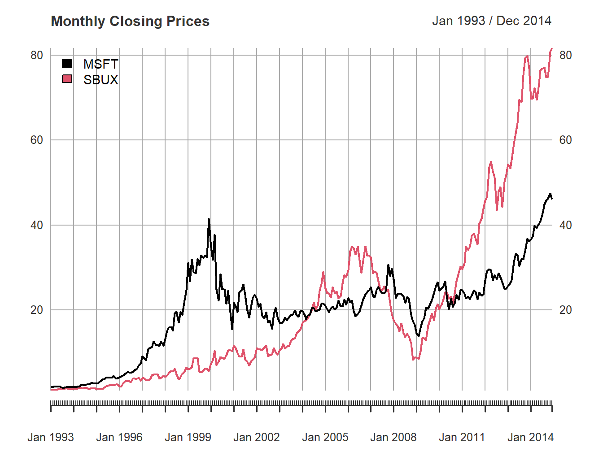
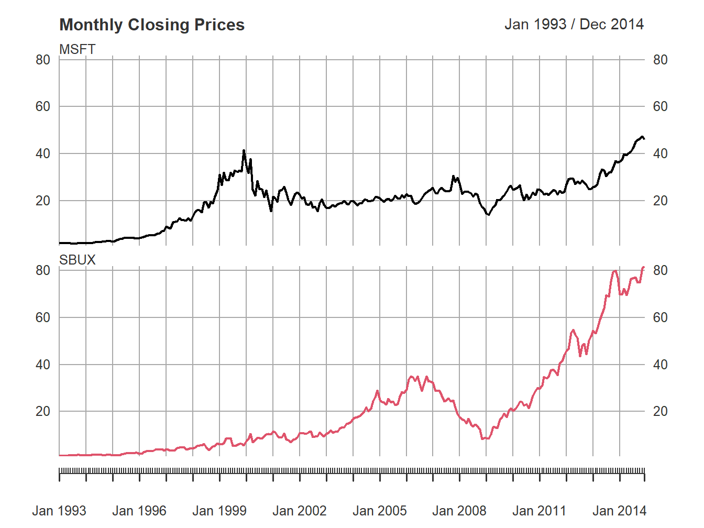
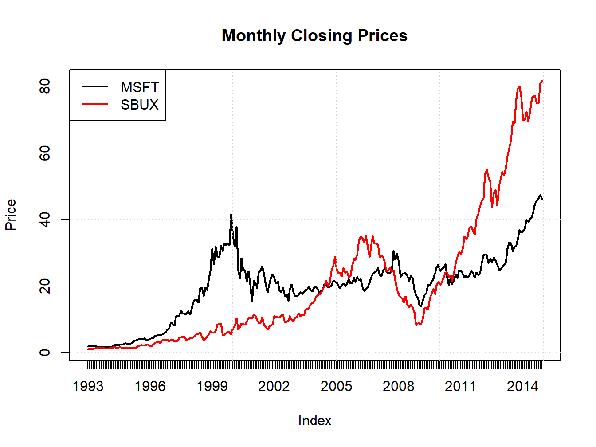
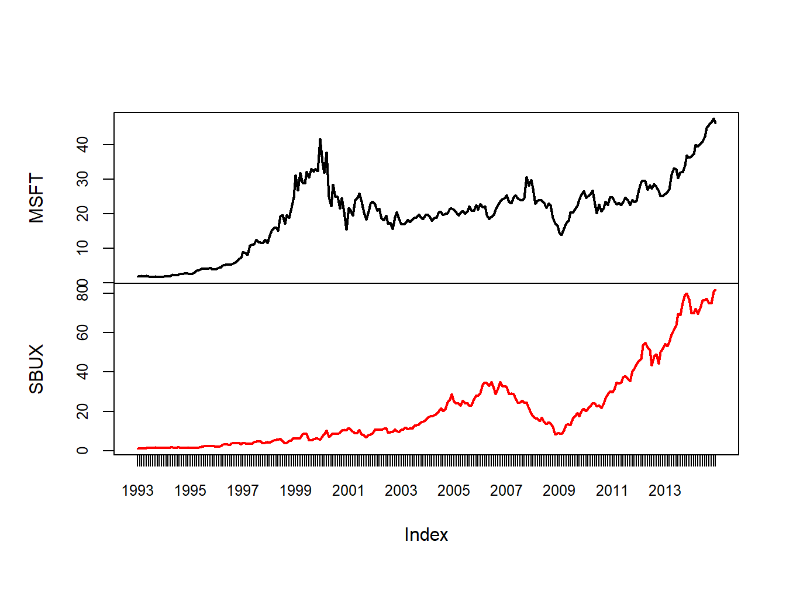
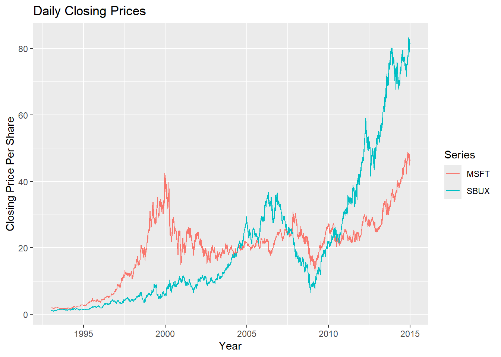
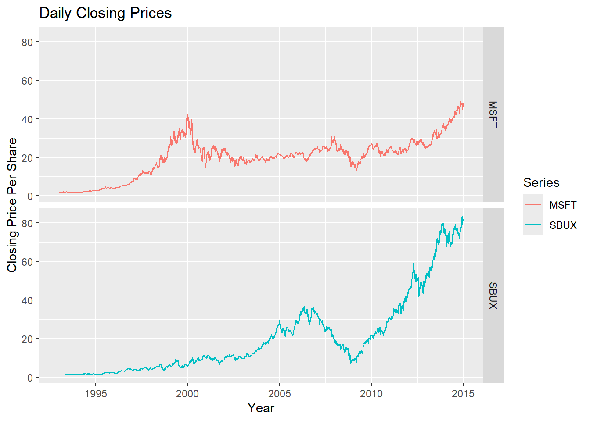
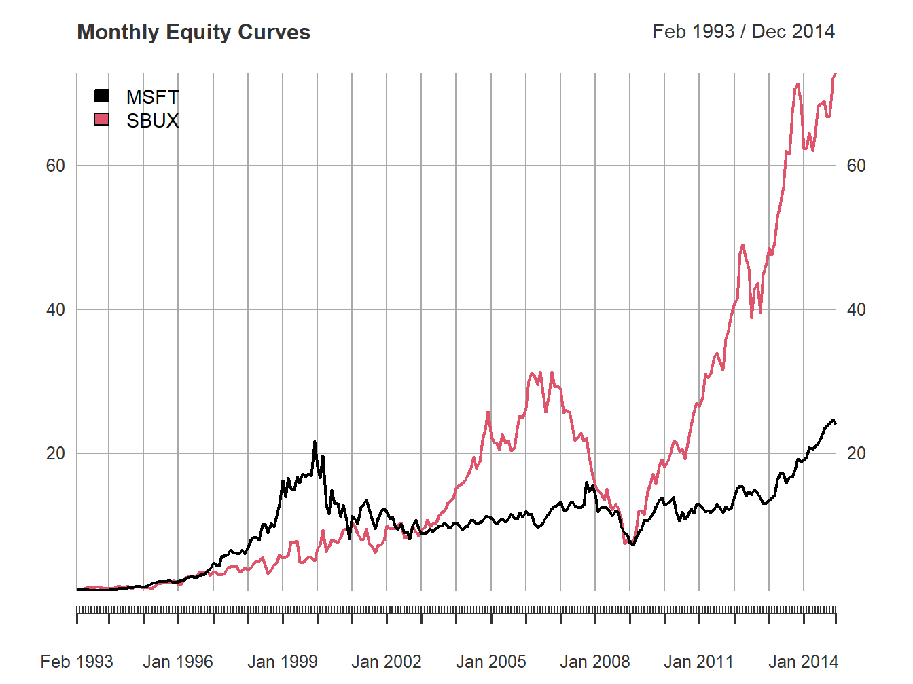
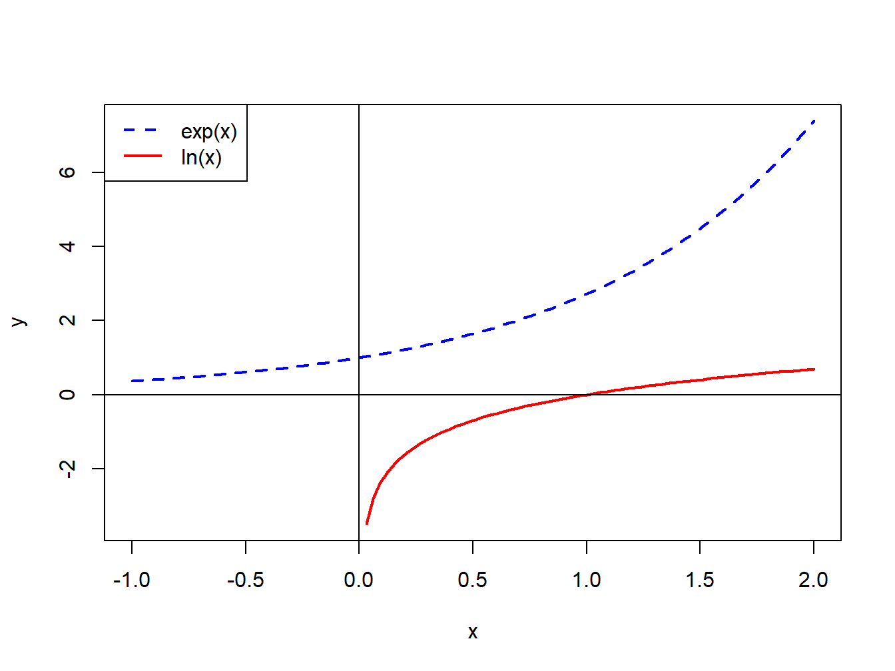

V = 1000
R = 0.03
FV1 = V*(1 + R)
FV5 = V*(1 + R)^5
FV10 = V*(1 + R)^10
c(FV1, FV5, FV10)
#> [1] 1030 1159 13441 Return Calculations
Updated: August 30, 2026
Copyright © Eric Zivot 2022, 2023, 2025, 2026
In this chapter I cover asset return calculations with an emphasis on equity returns. It is important to understand the different ways in which asset returns are calculated because most of the models presented in the book are for asset returns. Simple returns are most commonly used for money and portfolio calculations in practice. However, simple returns have some undesirable properties that make mathematical and statistical modeling difficult. Continuously compounded returns, in contrast, have nicer properties that make mathematical and statistical modeling easier.
This chapter is organized as follows. Section Section 1.1 covers basic time value of money calculations. Section Section 1.2 covers asset return calculations, including both simple and continuously compounded returns. Section Section 1.3 defines portfolios and details portfolio return calculations. Section Section 1.4 illustrates asset return calculations using R.
In this chapter I use the following R packages: ggplot2, introcompfinr, methods, PerformanceAnalytics, quantmod, xts, and zoo. Make sure these packages are installed and loaded before replicating the chapter examples.
1.1 The Time Value of Money
This section reviews basic time value of money calculations. The concepts of future value, present value and the compounding of interest are defined and discussed.
1.1.1 Future value, present value and simple interest
Consider an amount \(\$V\) invested for \(n\) years at a simple interest rate of \(R\) per annum (where \(R\) is expressed as a decimal). If compounding takes place only at the end of the year, the future value after \(n\) years is: \[ FV_{n}=\$V(1+R)\times\cdots\times(1+R)=\$V(1+R)^{n}. \tag{1.1}\] Over the first year, \(\$V\) grows to \(\$V(1+R)=\$V+\$V\times R\) which represents the initial principal \(\$V\) plus the payment of simple interest \(\$V\times R\) for the year. Over the second year, the new principal \(\$V(1+R)\) grows to \(\$V(1+R)(1+R)=\$V(1+R)^{2},\) and so on.
Example 1.1 (Future value with simple interest) Consider putting $1000 in an interest checking account that pays a simple annual percentage rate of 3%. The future value after \(n=1,5\) and 10 years is, respectively, \[\begin{align*} FV_{1} & =\$1000\cdot(1.03)^{1}=\$1030,\\ FV_{5} & =\$1000\cdot(1.03)^{5}=\$1159.27,\\ FV_{10} & =\$1000\cdot(1.03)^{10}=\$1343.92. \end{align*}\] Over the first year, $30 in interest is accrued; over three years, $159.27 in interest is accrued; over five years, $343.92 in interest is accrued. These calculations are easy to perform in R.
\(\blacksquare\)
The future value formula Equation 1.1 defines a relationship between four variables: \(FV_{n},\) \(V\), \(R\) and \(n\). Given three variables, the fourth variable can be determined. For example, given \(FV_{n}\), \(R\) and \(n\) and solving for \(V\) gives the present value formula: \[ V=\frac{FV_{n}}{(1+R)^{n}}. \tag{1.2}\] Here, \(V\) represents the present value (or current value) of the future value \(FV_{n}\) that is to be received \(n\) years from today. The future value is discounted by the factor \((1+R)^{-n}\) to reflect the fact that dollars to be received in \(n\) years are worth less than current dollars because current dollars can be invested today returning \(R\) per year. The discount factor \((1+R)^{-n}\) is less than \(1\), and represents the price today of \(\$1\) to be received in \(n\) years when the interest rate is \(R\) per year.
Taking \(FV_{n}\), \(n\) and \(V\) as given, the annual interest rate on the investment is defined as: \[ R=\left(\frac{FV_{n}}{V}\right)^{1/n}-1. \tag{1.3}\] Here, \(R\) represents a type of average rate of return on an investment known as the compound annual return.
Finally, given \(FV_{n}\), \(V\) and \(R\) we can solve for \(n\): \[ n=\frac{ln(FV_{n}/V)}{ln(1+R)}. \tag{1.4}\] The expression Equation 1.4 is called the horizon period and can be used to determine the number of years it takes for an investment of \(\$V\) to double. Setting \(FV_{n}=2V\) in Equation 1.4 gives: \[n=\frac{\ln(2)}{\ln(1+R)}\approx\frac{0.7}{R},\] which uses the approximations \(\ln(2)=0.6931\approx0.7\) and \(\ln(1+R)\approx R\) for \(R\) close to zero. The approximation \(n\approx0.7/R\) is called the rule of 70.
Example 1.2 (Using the rule of 70) The rule of 70 gives a good approximation as long as the interest rate is not too high.
R = seq(0.01, 0.10, by=0.01)
nExact = log(2)/log(1 + R)
nRule70 = 0.7/R
cbind(R, nExact, nRule70)
#> R nExact nRule70
#> [1,] 0.01 69.66 70.00
#> [2,] 0.02 35.00 35.00
#> [3,] 0.03 23.45 23.33
#> [4,] 0.04 17.67 17.50
#> [5,] 0.05 14.21 14.00
#> [6,] 0.06 11.90 11.67
#> [7,] 0.07 10.24 10.00
#> [8,] 0.08 9.01 8.75
#> [9,] 0.09 8.04 7.78
#> [10,] 0.10 7.27 7.00For \(R\) values between 1% and 10% the approximation error in the rule of 70 is never more than half a year.
\(\blacksquare\)
1.1.2 Multiple compounding periods
If interest is paid \(m\) times per year, then the future value after \(n\) years is: \[FV_{n}^{m}=\$V\cdot\left(1+\frac{R}{m}\right)^{m\cdot n}.\] \(R/m\) is often referred to as the periodic interest rate . As \(m\), the frequency of compounding, increases, the rate becomes continuously compounded and it can be shown that the future value becomes: \[FV_{n}^{c}=\lim_{m\rightarrow\infty}\$V\cdot\left(1+\frac{R}{m}\right)^{m\cdot n}=\$V\cdot e^{R\cdot n},\] where \(e^{(\cdot)}\) is the exponential function and \(e^{1}=2.71828\).
Example 1.3 (Future value with different compounding frequencies) For a simple annual percentage rate of 10%, the value of $1000 at the end of one year (\(n=1)\) for different values of \(m\) is calculated below.
V = 1000
R = 0.1
m = c(1, 2, 4, 356, 10000)
FV = V*(1 + R/m)^(m)
print(cbind(m, FV), digits=7)
#> m FV
#> [1,] 1 1100.000
#> [2,] 2 1102.500
#> [3,] 4 1103.813
#> [4,] 356 1105.155
#> [5,] 10000 1105.170The result with continuous compounding is
print(V*exp(R), digits=7)
#> [1] 1105.171\(\blacksquare\)
The continuously compounded return analogues to the present value, annual return and horizon period formulas Equation 1.2, Equation 1.3 and Equation 1.4 are: \[\begin{align*} V & =e^{-Rn}FV_{n},\\ R & =\frac{1}{n}\ln\left(\frac{FV_{n}}{V}\right),\\ n & =\frac{1}{R}\ln\left(\frac{FV_{n}}{V}\right). \end{align*}\]
1.1.3 Effective annual rate
We now consider the relationship between simple interest rates, periodic rates, effective annual rates and continuously compounded rates. Suppose an investment pays a periodic interest rate of 2% each quarter. This gives rise to a simple annual rate of 8% (2% \(\times\) 4 quarters). At the end of the year, $1000 invested accrues to: \[\$1000\cdot\left(1+\frac{0.08}{4}\right)^{4\cdot1}=\$1082.40.\] The effective annual rate, \(R_{A}\), on the investment is determined by the relationship: \[\$1000\cdot(1+R_{A})=\$1082.40.\] Solving for \(R_{A}\) gives: \[R_{A}=\frac{\$1082.40}{\$1000}-1=0.0824,\] or \(R_{A}=8.24\%.\) Here, the effective annual rate is the simple interest rate with annual compounding that gives the same future value that occurs with simple interest compounded four times per year. The effective annual rate is greater than the simple annual rate due to the payment of interest on interest.
The general relationship between the simple annual rate \(R\) with payments \(m\) times per year and the effective annual rate, \(R_{A}\), is:
\[(1+R_{A})=\left(1+\frac{R}{m}\right)^{m}.\] Given the simple rate \(R\), we can solve for the effective annual rate using: \[ R_{A}=\left(1+\frac{R}{m}\right)^{m}-1. \tag{1.5}\] Given the effective annual rate \(R_{A}\), we can solve for the simple rate using: \[R=m\left[(1+R_{A})^{1/m}-1\right].\] The relationship between the effective annual rate and the simple rate that is compounded continuously is: \[(1+R_{A})=e^{R}.\] Hence, \[\begin{align*} R_{A} & =e^{R}-1,\\ R & =\ln(1+R_{A}). \end{align*}\]
Example 1.4 (Determine effective annual rates) The effective annual rates associated with the investments in example Example 1.2 are calculated below.
RA = FV/V - 1
print(cbind(m, FV, RA), digits=7)
#> m FV RA
#> [1,] 1 1100.000 0.1000000
#> [2,] 2 1102.500 0.1025000
#> [3,] 4 1103.813 0.1038129
#> [4,] 356 1105.155 0.1051554
#> [5,] 10000 1105.170 0.1051704The effective annual rate with continuous compounding is
print(exp(R) - 1, digits=7)
#> [1] 0.1051709\(\blacksquare\)
Example 1.5 (Determine continuously compounded rate from effective annual rate) Suppose an investment pays a periodic interest rate of 5% every six months (\(m=2,R/2=0.05\)). In the market this would be quoted as having an annual percentage rate, \(R_{A}\), of 10%. An investment of $100 yields \(\$100\cdot(1.05)^{2}=\$110.25\) after one year. The effective annual rate, \(R_{A}\), is then 10.25%. To find the continuously compounded simple rate that gives the same future value as investing at the effective annual rate we solve: \(R=\ln(1.1025)=0.09758.\) That is, if interest is compounded continuously at a simple annual rate of 9.758% then $100 invested today would grow to \(\$100\cdot e^{0.09758}=\$110.25\)
\(\blacksquare\)
1.2 Asset Return Calculations
In this section, we review asset return calculations given initial and future prices associated with an investment. We first summarize the main type of assets used for investment purposes. Next, we cover simple return calculations, which are typically reported in practice but are often not convenient for statistical modeling purposes. We then describe continuously compounded return calculations, which are more convenient for statistical modeling purposes. We finish the section with a discussion of portfolio return calculations.
1.2.1 Assets
When we talk about assets in this book, we mean the typical investment assets available for purchase to individuals through brokerage and retirement accounts. These include bonds, stocks, mutual funds, exchange traded funds and notes, and derivative securities. Investment assets can be purchased through online brokerage accounts at firms like Ally Invest, Charles Schwab, E*TRADE, Fidelity, Interactive Brokers, Merrill Lynch, Robinhood, TD Ameritrade, and Vanguard. Due to the growth and competition of online investment accounts, the cost of purchasing investment assets has dropped significantly over time.
Bonds
Bonds are assets that represent debt obligations from corporations or the government used to raise capital (money) to finance operations. A typical bond is characterized by (1) a principal amount, representing initial capital borrowed; (2) maturity date, representing when the principal must be repaid, (3) periodic coupon payments, representing interest paid on specific dates. Bonds issued by the U.S. government are called Treasury bonds, and are generally thought to be the safest bonds as it is very unlikely that the U.S. government will default on its debt obligations. Other government agencies as well as states and municipalities issue bonds to raise money. Corporate bonds are bonds issued by private and public corporations. Bonds other than Treasury bonds have the risk, called default risk, that the principal or coupon payments many not be made.
Stocks
A stock represents an ownership share in corporation. Public stock represents ownership in a publicly traded corporation, where the shares can be purchased or sold (traded) by the public in organized stock exchanges (markets). In the U.S. the main stock exchanges are the New York Stock Exchange (NYSE) and the National Association of Securities Dealers Automated Quotations (NASDAQ) exchange. Private stock represents ownership in a private corporation whose stock is not traded in an exchange. Private corporations become public companies when they decide to raise money (capital) by issuing new stock in a public exchange through an initial public offering (IPO). This new stock purchased by individuals can then be sold to others in the exchange. Ownership of stock often provides voting rights which allows stock holders to have a say in the management of the company. Owners of stock have a right to receive dividends, which are cash payments representing corporate profits. Corporations may or many not pay dividends. Typically, young growing companies reinvest their profits instead of paying dividends. The stocks of these companies are called growth stocks. More established companies more often pay dividends instead of reinvesting all profits.
Mutual Funds
A mutual fund is a professionally managed investment fund that pools money from many investors to purchase a collection of assets called a portfolio. Mutual funds typically invest in bonds, stocks, and money market instruments. Mutual funds are commonly used in individual retirement accounts (IRAs) and employee sponsored retirement accounts. Because mutual funds are managed portfolios they charge fees for this service. The amount of the fee depends on the activity of the portfolio manager. Actively managed funds, where the portfolio manager actively picks the assets in the portfolio, have the highest fees. Actively managed mutual funds are offered by many firms such as the Capital Group, Fidelity, Janice, Putnam, and T. Rowe Price. Passively managed funds have lower fees because the managers follow a rule to match a particular asset index such as the S&P 500 index. Passive mutual funds were pioneered by Vandguard. Mutual funds are traded on exchanges but are only traded at the end of each day.
Exchange Traded Funds and Notes
An exchange traded fund (ETF) is similar in many ways to a mutual fund, except that an ETF can be bought and sold throughout the day on stock exchanges. Most ETFs are index funds, that is, they hold the same securities in the same proportions as a certain stock market index or bond market index. The most popular ETFs in the U.S. replicate the S&P 500 Index, the total market index, the NASDAQ-100 index, the price of gold, the “growth” stocks in the Russell 1000 Index, or the index of the largest technology companies. ETNs are similar to ETFs. The main companies issuing ETFs and ETNs are Barclays Capital Inc. (iPath), BlackRock (iShares), Credit Swisse, Direxion, StateStreet (SPDR), Invesco (PowerShares), and ProShares. Each of these companies provide online information on their ETFs and ETNs. You can easily find ETFs and ETNs for particular asset categories and investment strategies at www.etf.com.
Derivative Securities
A derivative security is an asset whose value is derived from the behavior of other underlying assets such as bonds, stocks, ETFs, etc. Common derivative securities are forwards, futures, options and swaps. We will not consider derivative securities is this book.
Information and historical price data on many publicly traded assets is freely available at finance.yahoo.com.
1.2.2 Simple returns
Consider purchasing one share of an asset (e.g., stock, bond, ETF, mutual fund, option, etc.) at time \(t_{0}\) for the price \(P_{t_{0}}\), and then selling that share at time \(t_{1}\) for the price \(P_{t_{1}}.\) If there are no intermediate cash flows (e.g., dividends) between \(t_{0}\) and \(t_{1}\), the rate of return over the period \(t_{0}\) to \(t_{1}\) is the percentage change in price: \[ R(t_{0},t_{1})=\frac{P_{t_{1}}-P_{t_{0}}}{P_{t_{0}}}. \tag{1.6}\] The time between \(t_{0}\) and \(t_{1}\) is called the holding period and equation Equation 1.6 is called the holding period return. In principle, the holding period can be any amount of time: one second, five minutes, eight hours, two days six minutes and two seconds, fifteen years, etc.. To simplify matters, in this chapter we will assume that the holding period is some increment of calendar time; e.g., one day, one month or one year. In particular, we will assume a default holding period of one month in what follows.
Let \(P_{t}\) denote the price at the end of month \(t\) of an asset that pays no dividends and let \(P_{t-1}\) denote the price at the end of month \(t-1\). Then the one-month simple net return on an investment in the asset between months \(t-1\) and \(t\) is defined as: \[ R_{t}=\frac{P_{t}-P_{t-1}}{P_{t-1}}=\Delta P_{t}. \tag{1.7}\] Writing \((P_{t}-P_{t-1})/P_{t-1}=P_{t}/P_{t-1}-1\), we can define the simple gross return as: \[ 1+R_{t}=\frac{P_{t}}{P_{t-1}}. \tag{1.8}\] The one-month gross return has the interpretation of the future value of $1 invested in the asset for one-month with simple interest rate \(R_{t}\). Solving Equation 1.8 for \(P_{t}\) gives \[P_{t}=P_{t-1}(1+R_{t}),\] which shows \(P_{t}\) can be thought of as the future value of \(P_{t-1}\) invested for one month with simple return \(R_{t}.\) Unless otherwise stated, when we refer to returns we mean net returns. Since asset prices must always be non-negative (a long position in an asset is a limited liability investment), the smallest value for \(R_{t}\) is -1 or -100%.
Example 1.6 (Simple return calculation) Consider a one-month investment in Microsoft stock. Suppose you buy the stock in month \(t-1\) (e.g., end of February) at \(P_{t-1}=\$85\) and sell the stock the next month (e.g., end of March) for \(P_{t}=\$90.\) Further assume that Microsoft does not pay a dividend between months \(t-1\) and \(t\). The one-month simple net and gross returns (over the month of March) are then: \[\begin{align*} R_{t} & =\frac{\$90-\$85}{\$85}=\frac{\$90}{\$85}-1=1.0588-1=0.0588,\\ 1+R_{t} & =1.0588. \end{align*}\] The one-month investment in Microsoft yielded a 5.88% per month return. Alternatively, $1 invested in Microsoft stock in month \(t-1\) grew to $1.0588 in month \(t\). The calculations using R are:
P0 = 90
Pm1 = 85
R0 = (P0 - Pm1)/Pm1
c(R0,1 + R0)
#> [1] 0.0588 1.0588\(\blacksquare\)
The return calculation works the same way if multiple shares of an asset are initially purchased. Let \(s \ge 1\) denote the number of shares of an asset purchased at time \(t-1\). The initial value of the investment is then \(V_{t-1}=s \times P_{t-1}\). The value of the investment at time \(t\) is \(V_{t} = s \times P_{t}.\) The rate of return on the investment is the percentage change in value over the holding period: \[\begin{align} R_{t} &= \frac{V_{t} - V_{t-1}}{V_{t-1}} = \frac{s \times P_{t} - s \times P_{t-1}}{s \times P_{t-1}} \\ &= \frac{s \times(P_{t} - P_{t-1})}{s \times P_{t-1}} = \frac{P_{t} - P_{t-1}}{P_{t-1}} \end{align}\]
As a result, the future value of the investment is equal to the current value times the gross return: \[V_{t} = V_{t-1} \times (1 + R_{t})\]
1.2.2.1 Multi-period returns
The simple two-month return on an investment in an asset between months \(t-2\) and \(t\) is defined as: \[R_{t}(2)=\frac{P_{t}-P_{t-2}}{P_{t-2}}=\frac{P_{t}}{P_{t-2}}-1.\] Writing \(P_{t}/P_{t-2}=(P_{t}/P_{t-1})\cdot (P_{t-1}/P_{t-2})\) the two-month return can be expressed as: \[\begin{align*} R_{t}(2) & =\frac{P_{t}}{P_{t-1}}\cdot\frac{P_{t-1}}{P_{t-2}}-1\\ & =(1+R_{t})(1+R_{t-1})-1. \end{align*}\] Then the simple two-month gross return becomes: \[1+R_{t}(2)=(1+R_{t})(1+R_{t-1})=1+R_{t-1}+R_{t}+R_{t-1}R_{t},\] which is the product of the two simple one-month gross returns, called the geometric average, and not one plus the sum of the two one-month returns. Hence, the two-month net return is \[R_{t}(2)=R_{t-1}+R_{t}+R_{t-1}R_{t}.\] If, however, \(R_{t-1}\) and \(R_{t}\) are close to zero then \(R_{t-1}R_{t}\approx0\) and \(1+R_{t}(2)\approx1+R_{t-1}+R_{t}\) so that \(R_{t}(2)\approx R_{t-1}+R_{t}\).
Example 1.7 (Computing two-period returns) Continuing with the previous example, suppose that the price of Microsoft stock in month \(t-2\) is \(\$80\) and no dividend is paid between months \(t-2\) and \(t.\) The two-month net return is: \[ R_{t}(2)=\frac{\$90-\$80}{\$80}=\frac{\$90}{\$80}-1=1.1250-1=0.1250, \] or 12.50% per two months. The two one-month returns are: \[\begin{align*} R_{t-1} & =\frac{\$85-\$80}{\$80}=1.0625-1=0.0625,\\ R_{t} & =\frac{\$90-85}{\$85}=1.0588-1=0.0588, \end{align*}\] and the geometric average of the two one-month gross returns is: \(1+R_{t}(2)=1.0625 \times 1.0588=1.1250.\)
The calculations can be vectorized in R as follows:
Pm2 = 80
# create vector of prices
P = c(Pm2, Pm1, P0)
# calculate vector of 1-month returns from vector of prices
R = (P[2:3] - P[1:2])/P[1:2]
R
#> [1] 0.0625 0.0588
# calculate 2-month return from 2 1-month returns
(1 + R[1])*(1 + R[2]) - 1
#> [1] 0.125
# same calculation vectorized using R function cumprod()
cumprod(1+R) - 1
#> [1] 0.0625 0.1250In the above, P[2:3] represents the 2nd and 3rd elements of P, and P[1:2] represents the 1st and 2nd elements of P.
\(\blacksquare\)
It is important to recognize that two-period simple returns are not symmetric in the following sense. Suppose \(R_{t-1}=-0.5\) and \(R_{t}=0.5\) and initial wealth is $1. After two-periods $1 falls to \[\$1 \times (1+R_{t-1})(1+R_{t}) = \$1 \times (1-0.5)(1+0.5) = \$0.75\] That is, a 50% drop followed by a 50% gain does not return wealth to its initial level. In the second period, the return has to be 100% in order for wealth to return to its initial level.
In general, the \(k\)-month gross return is defined as the product of \(k\) one-month gross returns: \[ \begin{align}1+R_{t}(k) & =(1+R_{t})(1+R_{t-1})\cdots(1+R_{t-k+1})\\ & =\prod_{j=0}^{k-1}(1+R_{t-j}).\nonumber\end{align} \tag{1.9}\]
If all returns are close to zero then \[R_{t}(k) \approx \sum_{j=0}^{k-1} R_{t-j}\]
As with the one-month return, the multi-period return can also be derived in the same way if multiple shares of an asset are initially purchased. Using \(V_{t-j} = s \times P_{t-j}\) we have \[\begin{align} \frac{V_{t}}{V_{t-k}} &= \frac{V_{t}}{V_{t-1}} \times \frac{V_{t-1}}{V_{t-2}} \ldots \frac{V_{t-k+1}}{V_{t-k}} \\ &= \frac{s\times P_{t}}{s\times P_{t-1}} \times \frac{s\times P_{t-1}}{s\times P_{t-2}} \ldots \frac{s\times P_{t-k+1}}{s\times P_{t-k}} \\ &= (1+R_{t})(1+R_{t-1})\cdots(1+R_{t-k+1}) \end{align}\] As a result, \(V_{t}\) can be interpreted as the future value of \(V_{t-k}\) based on the returns \(R_{t-k+1}, \cdots, R_{t}\): \[V_{t} = V_{t-k} \times (1+R_{t-k+1})(1+R_{t-k+2}) \cdots (1+R_{t})\]
1.2.2.2 Adjusting for dividends
If an asset pays a dividend (or any cash payment), \(D_{t}\), sometime between months \(t-1\) and \(t\), the total net return calculation becomes: \[ R_{t}^{\textrm{total}}=\frac{P_{t}+D_{t}-P_{t-1}}{P_{t-1}}=\frac{P_{t}-P_{t-1}}{P_{t-1}}+\frac{D_{t}}{P_{t-1}}, \tag{1.10}\] where \((P_{t}-P_{t-1})/P_{t-1}\) is referred as the capital gain and \(D_{t}/P_{t-1}\) is referred to as the dividend yield. The total gross return is: \[ 1+R_{t}^{\textrm{total}}=\frac{P_{t}+D_{t}}{P_{t-1}}. \tag{1.11}\] The formula Equation 1.9 for computing multi-period return remains the same except that one-period gross returns are computed using Equation 1.11.
High dividend paying stocks are often called income stocks and have characteristics similar to bonds where the regular dividends play a similar role as coupon interest payments.
Example 1.8 (Compute total return when dividends are paid) Consider a one-month investment in Microsoft stock. Suppose you buy the stock in month \(t-1\) at \(P_{t-1}=\$85\) and sell the stock the next month for \(P_{t}=\$90\). Further assume that Microsoft pays a $1 dividend between months \(t-1\) and \(t\). The capital gain, dividend yield and total return are then: \[\begin{align*} R_{t} & =\frac{\$90+\$1-\$85}{\$85}=\frac{\$90-\$85}{\$85}+\frac{\$1}{\$85}\\ & =0.0588+0.0118\\ & =0.0707. \end{align*}\] The one-month investment in Microsoft yields a 7.07% per month total return. The capital gain component is \(5.88\%\) and the dividend yield component is 1.18%
\(\blacksquare\)
1.2.2.3 Adjusting for inflation
The return calculations considered so far are based on the nominal or current prices of assets. Returns computed from nominal prices are nominal returns. The real return on an asset over a particular horizon takes into account the growth rate of the general price level over the horizon. If the nominal price of the asset grows faster than the general price level, then the nominal return will be greater than the inflation rate and the real return will be positive. Conversely, if the nominal price of the asset increases less than the general price level, then the nominal return will be less than the inflation rate and the real return will be negative. Real returns reflect the increase or decrease in purchasing power from an investment.
The computation of real returns on an asset is a two-step process:
- Deflate the nominal price of the asset by the general price level
- Compute returns in the usual way using the deflated prices
To illustrate, consider computing the real simple one-period return on an asset. Let \(P_{t}\) denote the nominal price of the asset at time \(t\) and let \(CPI_{t}\) denote an index of the general price level (e.g. consumer price index) at time \(t\)1. The deflated or real price at time \(t\) is: \[P_{t}^{\textrm{Real}}=\frac{P_{t}}{CPI_{t}},\] and the real one-period return is: \[ \begin{align}R_{t}^{\textrm{Real}} &=\frac{P_{t}^{\textrm{Real}}-P_{t-1}^{\textrm{Real}}}{P_{t-1}^{\textrm{Real}}}=\frac{\frac{P_{t}}{CPI_{t}}-\frac{P_{t-1}}{CPI_{t-1}}}{\frac{P_{t-1}}{CPI_{t-1}}} \nonumber \\ &=\frac{P_{t}}{P_{t-1}}\cdot\frac{CPI_{t-1}}{CPI_{t}}-1.\end{align} \tag{1.12}\] The one-period gross real return return is: \[ 1+R_{t}^{\textrm{Real}}=\frac{P_{t}}{P_{t-1}}\cdot\frac{CPI_{t-1}}{CPI_{t}}. \tag{1.13}\] If we define inflation between periods \(t-1\) and \(t\) as: \[ \pi_{t}=\frac{CPI_{t}-CPI_{t-1}}{CPI_{t-1}}=\%\Delta CPI_{t}, \tag{1.14}\] then \(1+\pi_{t}=CPI_{t}/CPI_{t-1}\) and Equation 1.12 may be re-expressed as: \[ R_{t}^{\textrm{Real}}=\frac{1+R_{t}}{1+\pi_{t}}-1. \tag{1.15}\]
Example 1.9 (Compute real return) Consider, again, a one-month investment in Microsoft stock. Suppose the CPI in months \(t-1\) and \(t\) is 1 and 1.01, respectively, representing a 1% monthly growth rate in the overall price level. The real prices of Microsoft stock are: \[ \begin{align*} P_{t-1}^{\textrm{Real}}&=\frac{\$85}{1}=\$85, \\ P_{t}^{\textrm{Real}}&=\frac{\$90}{1.01}=\$89.1089, \end{align*} \] and the real monthly return is: \[ R_{t}^{\textrm{Real}}=\frac{\$89.10891-\$85}{\$85}=0.0483. \] The nominal return and inflation over the month are: \[ \begin{align*} R_{t}&=\frac{\$90-\$85}{\$85}=0.0588,\\ \pi_{t}&=\frac{1.01-1}{1}=0.01. \end{align*} \] Then the real return computed using Equation 1.15 is: \[ R_{t}^{\textrm{Real}}=\frac{1.0588}{1.01}-1=0.0483. \] Notice that simple real return is almost, but not quite, equal to the simple nominal return minus the inflation rate: \(R_{t}^{\textrm{Real}}\approx R_{t}-\pi_{t}=0.0588-0.01=0.0488.\)
\(\blacksquare\)
1.2.2.4 Adjusting for taxes
Any investment that generates a capital gain is potentially subject to taxation by the government. This taxation reduces the investment return. To see how this works, let \(V_{t}\) denote an initial investment amount, let \(R_{t}>0\) denote the one-period rate of return on the investment, and let \(\tau\) denote the tax rate on investment income (capital gain). In the U.S. the tax rate on long-term (holding period more than one year) capital gains is either \(0\%\), \(15\%\), or \(20\%\) (depending on income) and the tax rate on short-term capital gains (holding period less than one year) is the tax rate on ordinary income (which could be as high as \(35\%\)). The future value without taxes is \(V_{t}(1+R_{t})\), and \(V_{t}R_{t}\) is the capital gain. The amount owed in taxes is \(V_{t}R_{t}\tau\) and the amount remaining after taxes is \(V_{t}R_{t}(1 -\tau)\). The after tax return is \[ \begin{eqnarray}R_{t}^{Atax} &= \frac{V_{t}+V_{t}R_{t}(1 -\tau)-V_{t}}{V_{t}} \nonumber \\ &=\frac{V_{t}(1+R_{t}(1-\tau)-1)}{V_{t}} \nonumber \\ &= R_{t}(1-\tau),\end{eqnarray} \tag{1.16}\]
Hence, the after tax return is the before tax return multiplied by one minus the tax rate.
Example 1.10 (Compute after tax return) Let \(V_{t}=\$100\), \(R_{t}=0.05\), and \(\tau=0.20\). Then the after tax return is \[R_{t}^{Atax} = (0.05)(1-0.20) = (0.05)(0.80) = 0.04. \] The amount paid in taxes is \(\$1000\times(0.05)\times(0.2)=\$10\), and the after tax profit is \(\$50 - \$10 = \$40\).
1.2.2.5 Return on foreign investment
It is common for an investor in one country to buy an asset in another country as an investment. If the two countries have different currencies then the exchange rate between the two currencies influences the return on the asset. To illustrate, consider an investment in a foreign stock (e.g. a stock trading on the London stock exchange) by a U.S. national (domestic investor). The domestic investor takes U.S. dollars, converts them to the foreign currency (e.g. British Pound) via the exchange rate (price of foreign currency in U.S. dollars) and then purchases the foreign stock using the foreign currency. When the stock is sold, the proceeds in the foreign currency must then be converted back to the domestic currency.
To be more precise, consider the information in the table below:
| Month | U.S. $ Cost of 1 Pound \(£\), \(E_{t}^{US/UK}\) | Value of British Shares, \(P_{t}^{UK}\) | Value in U.S. $, \(P_{t}^{US}\) |
|---|---|---|---|
| t - 1 | $ 1.50 | \(£40\) | \(\$1.50\times £40=\$60\) |
| t | $ 1.30 | \(£45\) | \(\$1.30\times £45=\$58.5\) |
Let \(P_{t}^{US}\), \(P_{t}^{UK}\), and \(E_{t}^{US/UK}\) denote the U.S. dollar price of the asset, British Pound price of the asset, and currency exchange rate between U.S. dollars and British Pounds, at the end of month \(t\), respectively. The U.S. dollar cost of one share of British stock in month \(t-1\) is \[P_{t-1}^{US}=E_{t-1}^{US/UK}\times P_{t-1}^{UK}=\$1.50\times￡40=\$60,\] and the U.S. dollar cost at time \(t\) is \[P_{t}^{US}=E_{t}^{US/UK}\times P_{t}^{UK}=\$1.30\times£45=\$58.5.\] The U.S. dollar rate of return is then \[R_{t}^{US}=\frac{P_{t}^{US}-P_{t-1}^{US}}{P_{t-1}^{US}}=\frac{\$58.5-\$60}{\$60}=-0.025.\] Notice that \[ \begin{eqnarray}R_{t}^{US} & = & \frac{E_{t}^{US/UK}\times P_{t}^{UK}-E_{t-1}^{US/UK}\times P_{t-1}^{UK}}{E_{t-1}^{US/UK}\times P_{t-1}^{UK}} \nonumber \\ & = & \frac{E_{t}^{US/UK}\times P_{t}^{UK}}{E_{t-1}^{US/UK}\times P_{t-1}^{UK}}-1 \nonumber \\ & = & (1+R_{t}^{US/UK})(1+R_{t}^{UK})-1,\end{eqnarray} \tag{1.17}\] where \[\frac{E_{t}^{US/UK}}{E_{t-1}^{US/UK}}=1+R_{t}^{US/UK},\,\frac{P_{t}^{UK}}{P_{t-1}^{UK}}=1+R_{t}^{UK}.\] Hence, \[1+R_{t}^{US} = (1+R_{t}^{US/UK})(1+R_{t}^{UK}).\] Here, \(R_{t}^{US/UK}\) is the simple rate of return on foreign currency and \(R_{t}^{UK}\) is the simple rate of return on the British stock in British Pounds: \[\begin{eqnarray*} R_{t}^{US/UK} & = & \frac{E_{t}^{US/UK}-E_{t-1}^{US/UK}}{E_{t-1}^{US/UK}}=\frac{\$1.30-\$1.50}{\$1.50}=-0.133,\\ R_{t}^{UK} & = & \frac{P_{t}^{UK}-P_{t-1}^{UK}}{P_{t-1}^{UK}}=\frac{£45-£40}{£40}=0.125. \end{eqnarray*}\] Hence, the gross return, \(1+R_{t}^{US}\), for the U.S. investor has two parts: (1) the gross return from an investment in foreign currency, \(1+R_{t}^{US/UK}\) ; and (2) the gross return of the foreign asset in the foreign currency, \(1+R_{t}^{UK}:\) \[\begin{eqnarray*} 1+R_{t}^{US} & = & (1+R_{t}^{US/UK})(1+R_{t}^{UK})\\ & = & (0.867)(1.125)\\ & = & 0.975. \end{eqnarray*}\] In this example, the U.S. investor loses money even though the British investment has a positive rate of return because of the large drop in the exchange rate.
1.2.2.6 Annualizing returns
Very often returns over different horizons are annualized, i.e., converted to an annual return, to facilitate comparisons with other investments. The annualization process depends on the holding period of the investment and an implicit assumption about compounding. We illustrate with several examples using monthly returns. The same techniques work with different holding periods.
To start, if our investment horizon is one year then the annual gross and net returns are computed directly from the 12 one-month returns: \[\begin{align*} 1+R_{A} & =1+R_{t}(12)=\frac{P_{t}}{P_{t-12}}=(1+R_{t})(1+R_{t-1})\cdots(1+R_{t-11}),\\ R_{A} & =R_{t}(12). \end{align*}\] In this case, no compounding is required to create an annual return.
Next, consider a one-month investment in an asset with return \(R_{t}\). What is the annualized return on this investment? If we assume that we receive the same return \(R=R_{t}\) every month for the year, then the gross annual return is: \[1+R_{A}=1+R_{t}(12)=(1+R)^{12}.\] That is, the annual gross return is defined as the assumed common monthly return compounded for 12 months. The net annual return is then: \[R_{A}=(1+R)^{12}-1.\] It is important to recognize that this annualization calculation assumes the same monthly return \(R\) for each of the 12 months. This can be highly inaccurate and misleading if the actual future monthly returns are much different than \(R\). The following examples illustrate.
Example 1.11 (Compute annualized return from one-month return) In the first example, the one-month return, \(R_{t}\), on Microsoft stock was 5.88%. If we assume that we can get this return for 12 months then the annualized return is: \(R_{A}=(1.0588)^{12}-1=1.9850-1=0.9850,\) or 98.50% per year. Pretty good! However, this is likely to be highly inaccurate since getting 5% every month for a year is highly unlikely for a risky stock like Microsoft.
\(\blacksquare\)
Now, consider a two-month investment with return \(R_{t}(2).\) If we assume that we receive the same two-month return \(R(2)=R_{t}(2)\) for the next six two-month periods, then the gross and net annual returns are: \[\begin{align*} 1+R_{A} & =(1+R(2))^{6},\\ R_{A} & =(1+R(2))^{6}-1. \end{align*}\] Here the annual gross return is defined as the two-month return compounded for 6 months.
Example 1.12 (Compute annualized return from two-month return) Suppose the two-month return, \(R_{t}(2),\) on Microsoft stock is 12.5%. If we assume that we can get this two-month return for the next 6 two-month periods then the annualized return is: \(R_{A}=(1.1250)^{6}-1=2.0273-1=1.0273,\) or 102.73% per year. As with the previous example, this result is likely to be inaccurate as it is highly unlikely to get 12.5% every two months for the rest of the year.
\(\blacksquare\)
As the last example, suppose that our investment horizon is two years. That is, we start our investment at time \(t-24\) and cash out at time \(t\). The two-year gross return is then \(1+R_{t}(24)=P_{t}/P_{t-24}\). What is the annual return on this two-year investment? The process is the same as computing the effective annual rate. To determine the annual return we solve the following relationship for \(R_{A}\): \[\begin{align*} (1+R_{A})^{2} & =1+R_{t}(24)\rightarrow\\ R_{A} & =\left(1+R_{t}(24)\right)^{1/2}-1. \end{align*}\] In this case, the annual return is compounded twice to get the two-year return and the relationship is then solved for the annual return.
Example 1.13 (Compute annualized return from two-year return) Suppose that the price of Microsoft stock \(24\) months ago is \(P_{t-24}=\$50\) and the price today is \(P_{t}=\$90\). The two-year gross return is \(1+R_{t}(24)=\$90/\$50=1.8000\) which yields a two-year net return of \(R_{t}(24)=0.80=80\%\). The annual return for this investment is defined as: \(R_{A}=(1.800)^{1/2}-1=1.3416-1=0.3416\) or 34.16% per year.
\(\blacksquare\)
1.2.2.7 Average returns
For investments over a given horizon, it is often of interest to compute a measure of the average rate of return over the horizon. To illustrate, consider a sequence of monthly investments over \(n\) months with monthly returns \(R_{1},R_{2},\ldots,R_{n}\). The \(n-\)month return is
\[R(n)=(1+R_{1})(1+R_{2})\cdots(1+R_{n})-1.\] What is the average monthly return? There are two possibilities. The first is the arithmetic average return: \[\bar{R}^{Arith}=\frac{1}{n}\left(R_{1}+R_{2}+\cdots+R_{n}\right).\]
The second is the geometric average return: \[\bar{R}^{Geo}=\left[(1+R_{1})(1+R_{2})\cdots(1+R_{n})\right]^{1/n}-1.\] Notice that the geometric average return is the monthly return which compounded monthly for \(n\) months gives the gross \(n-\)month return \[(1+\bar{R}^{Geo})^{n}=1+R(n).\] As a measure of average investment performance, the geometric average return is preferred to the arithmetic average return. To see why, consider a two-month investment horizon with monthly returns \(R_{1}=0.5\) and \(R_{2}=-0.5\). One dollar invested over these two months grows to \[ (1+R_{1})(1+R_{2})=(1.5)(0.5)=0.75, \] for a two-period return of \(R(2)=0.75-1=-0.25\). Hence, the two-month investment loses 25%. The arithmetic average return is \[\bar{R}^{Arith}=\frac{1}{2}\left(0.5+(-0.5)\right)=0.\] As a measure of investment performance, this is misleading because the investment loses money over the two-month horizon. The average return indicates the investment breaks even. The geometric average return is \[\bar{R}^{Geo}=\left[(1.5)(0.5)\right]^{1/2}-1=-0.134.\] This is a more accurate measure of investment performance because it indicates that the investment eventually loses money. In addition, the compound two-month return using \(\bar{R}^{Geo}=-0.134\) is equal to \(R(2)=-0.25.\)
While the arithmetic average return may not be the most appropriate measure of actual average investment performance, we shall see in the following chapters that it is a useful estimate of expected performance.
1.2.3 Continuously compounded returns
In this section we define continuously compounded returns from simple returns, and describe their properties.
1.2.3.1 One-period returns
Let \(R_{t}\) denote the simple monthly return on an investment. The continuously compounded monthly return, \(r_{t}\), is defined as: \[ r_{t}=\ln(1+R_{t})=\ln\left(\frac{P_{t}}{P_{t-1}}\right), \tag{1.18}\] where \(\ln(\cdot)\) is the natural log function2. To see why \(r_{t}\) is called the continuously compounded return, take the exponential of both sides of Equation 1.18 to give: \[e^{r_{t}}=1+R_{t}=\frac{P_{t}}{P_{t-1}}.\] Rearranging we get \(P_{t}=P_{t-1}e^{r_{t}}=P_{t-t}(1+R_{t})\), so that \(r_{t}\) is the continuously compounded growth rate in prices between months \(t-1\) and \(t\). This is to be contrasted with \(R_{t}\), which is the simple growth rate in prices between months \(t-1\) and \(t\) without any compounding. As a result, \(r_{t}\) is always smaller than \(R_{t}\). Furthermore, since \(\ln\left(x/y\right)=\ln(x)-\ln(y)\) it follows that: \[\begin{align*} r_{t} & =\ln\left(\frac{P_{t}}{P_{t-1}}\right)\\ & =\ln(P_{t})-\ln(P_{t-1})\\ & =p_{t}-p_{t-1}, \end{align*}\] where \(p_{t}=\ln(P_{t})\). Hence, the continuously compounded monthly return, \(r_{t}\), can be computed simply by taking the first difference of the natural logarithms of monthly prices.
If the simple return \(R_{t}\) is close to zero (\(R_{t}\approx0\)) then \(r_{t}=\mathrm{ln}(1+R_{t})\approx R_{t}\). This result can be shown using a first order Taylor series approximation to the function \(f(x)=\mathrm{ln}(1+x).\) Recall, for a continuous and differentiable function \(f(x)\) the first order Taylor series approximation of \(f(x)\) about the point \(x=x_{0}\) is \[f(x)=f(x_{0})+f^{\prime}(x_{0})(x-x_{0})+\mathrm{remainder},\] where \(f^{\prime}(x_{0})\) denotes the derivative of \(f(x)\) evaluated at \(x_{0}.\) Let \(f(x)=\mathrm{ln}(1+x)\) and set \(x_{0}=0.\) Note that \[f(0)=\mathrm{ln}(1)=0,\,f^{\prime}(x)=\frac{1}{1+x},\,f^{\prime}(0)=1.\] Then, using the first order Taylor series approximation, \(\mathrm{ln}(1+x)\approx x\) when \(x\approx0.\)
Example 1.14 (Compute continuously compounded returns) Using the price and return data from Example Example 1.6, the continuously compounded monthly return on Microsoft stock can be computed in two ways: \[\begin{eqnarray*} r_{t} & = & \mathrm{ln}(1.0588)=0.0571\\ r_{t} & = & \mathrm{\ln}(90)-\ln(85)=4.4998-4.4427=0.0571 \end{eqnarray*}\] Notice that \(r_{t}\) is slightly smaller than \(R_{t}\). Using R, the calculations are
c(log(1 + R0), log(P0) - log(Pm1))
#> [1] 0.0572 0.0572Notice that the R function log() computes the natural logarithm.
\(\blacksquare\)
Given a monthly continuously compounded return \(r_{t}\), it is straightforward to solve back for the corresponding simple net return \(R_{t}\): \[ R_{t}=e^{r_{t}}-1. \tag{1.19}\] Hence, nothing is lost by considering continuously compounded returns instead of simple returns. Continuously compounded returns are very similar to simple returns as long as the return is relatively small, which it generally will be for monthly or daily returns. Since \(R_{t}\) is bounded from below by -1, the smallest value for \(r_{t}\) is \(r_{t} = ln(1-1) = -\infty\). This, however, does not mean that you could lose an infinite amount of money on an investment. The actual amount of money lost is determined by the simple return Equation 1.19.
Example 1.15 (Determine simple returns from continuously compounded returns) In the previous example, the continuously compounded monthly return on Microsoft stock is \(r_{t}=5.71\%\). The simple net return is then: \(R_{t}=e^{.0571}-1=0.0588.\)
\(\blacksquare\)
For asset return modeling and statistical analysis it is often more convenient to use continuously compounded returns than simple returns. One reason is that continuously compounded returns take values on the entire real line, \(-\infty < r_{t} < \infty\), whereas simple returns are only defined for values larger than -1, \(-1 \le R_{t} < \infty\). Another reason is due to the additivity property of multi-period continuously compounded returns discussed in the next sub-section.
1.2.3.2 Multi-period returns
The relationship between multi-period continuously compounded returns and one-period continuously compounded returns is more simple than the relationship between multi-period simple returns and one-period simple returns. To illustrate, consider the two-month continuously compounded return defined as: \[r_{t}(2)=\ln(1+R_{t}(2))=\ln\left(\frac{P_{t}}{P_{t-2}}\right)=p_{t}-p_{t-2}.\] Taking exponentials of both sides and rearranging gives: \[P_{t}=P_{t-2}e^{r_{t}(2)}\] so that \(r_{t}(2)\) is the continuously compounded growth rate of prices between months \(t-2\) and \(t\). Using \(P_{t}/P_{t-2}=(P_{t}/P_{t-1})\cdot(P_{t-1}/P_{t-2})\) and the fact that \(\ln(x\cdot y)=\ln(x)+\ln(y)\) it follows that: \[\begin{align*} r_{t}(2) & =\ln\left(\frac{P_{t}}{P_{t-1}}\cdot\frac{P_{t-1}}{P_{t-2}}\right)\\ & =\ln\left(\frac{P_{t}}{P_{t-1}}\right)+\ln\left(\frac{P_{t-1}}{P_{t-2}}\right)\\ & =r_{t}+r_{t-1}. \end{align*}\] Hence the continuously compounded two-month return is just the sum of the two continuously compounded one-month returns. Recall, with simple returns the two-month return is a multiplicative (geometric) sum of two one-month returns.
Example 1.16 (Compute two-month continuously compounded returns) Using the data from Example 1.7, the continuously compounded two-month return on Microsoft stock can be computed in two equivalent ways. The first way uses the difference in the logs of \(P_{t}\) and \(P_{t-2}\): \[
r_{t}(2)=\ln(90)-\ln(80)=4.4998-4.3820=0.1178.
\]
The second way uses the sum of the two continuously compounded one-month returns. Here \(r_{t}=\ln(90)-\ln(85)=0.0571\) and \(r_{t-1}=\ln(85)-\ln(80)=0.0607\) so that: \[
r_{t}(2)=0.0571+0.0607=0.1178.
\] Notice that \(r_{t}(2)=0.1178<R_{t}(2)=0.1250\). The vectorized calculations in R are:
p = log(P)
r = log(1 + R)
c(r[1] + r[2], sum(r), p[3] - p[1], diff(p, 2))
#> [1] 0.118 0.118 0.118 0.118\(\blacksquare\)
Previously, we saw that simple two-period returns were not symmetric. Continuously compounded two-period returns, however, are symmetric. To see this, suppose \(r_{t-1}=-0.5\) and \(r_{t}=0.5\). Notice that the implied simple returns are not symmetric: \(R_{t-1}=e^{-0.5}-1=-0.3935\) and \(R_{t}=e^{0.5}-1=0.6487\). Then one dollar invested over two periods becomes: \[\$1 \times (1-0.3935)(1+0.6487) = \$1\]
The continuously compounded \(k\)-month return is defined by: \[r_{t}(k)=\ln(1+R_{t}(k))=\ln\left(\frac{P_{t}}{P_{t-k}}\right)=p_{t}-p_{t-k}.\] Using similar manipulations to the ones used for the continuously compounded two-month return, we can express the continuously compounded \(k\)-month return as the sum of \(k\) continuously compounded monthly returns: \[ r_{t}(k)=\sum_{j=0}^{k-1}r_{t-j}. \tag{1.20}\] The additivity of continuously compounded returns to form multiperiod returns is an important property for statistical modeling purposes.
1.2.3.3 Adjusting for dividends
The continuously compounded one-period return adjusted for dividends is defined by Equation 1.18, where \(R_{t}\) is computed using Equation 1.103.
Example 1.17 (Compute continuously compounded total return) From example Example 1.8, the total simple return using Equation 1.10 is \(R_{t}=0.0707.\) The continuously compounded total return is then: \[ r_{t}=\ln(1+R_{t})=\ln(1.0707)=0.0683. \]
\(\blacksquare\)
1.2.3.4 Adjusting for inflation
Adjusting continuously compounded nominal returns for inflation is particularly simple. The continuously compounded one-period real return is defined as: \[ r_{t}^{\textrm{Real}}=\ln(1+R_{t}^{\textrm{Real}}). \tag{1.21}\] Using Equation 1.13, it follows that: \[ \begin{align}r_{t}^{\textrm{Real}} & =\ln\left(\frac{P_{t}}{P_{t-1}}\cdot\frac{CPI_{t-1}}{CPI_{t}}\right)\\ &=\ln\left(\frac{P_{t}}{P_{t-1}}\right)+\ln\left(\frac{CPI_{t-1}}{CPI_{t}}\right)\nonumber\\ & =\ln(P_{t})-\ln(P_{t-1})+\ln(CPI_{t-1})-\ln(CPI_{t})\nonumber\\ &=\ln(P_{t})-\ln(P_{t-1})-\left(\ln(CPI_{t})-\ln(CPI_{t-1})\right)\nonumber\\ & =r_{t}-\pi_{t}^{c},\nonumber\end{align} \tag{1.22}\] where \(r_{t}=\ln(P_{t})-\ln(P_{t-1})=\ln(1+R_{t})\) is the nominal continuously compounded one-period return and \(\pi_{t}^{c}=\ln(CPI_{t})-\ln(CPI_{t-1})=\ln(1+\pi_{t})\) is the one-period continuously compounded growth rate in the general price level (continuously compounded one-period inflation rate). Hence, the real continuously compounded return is simply the nominal continuously compounded return minus the the continuously compounded inflation rate.
Example 1.18 (Compute continuously compounded real returns) From Example Example 1.9, the nominal simple return is \(R_{t}=0.0588\), the monthly inflation rate is \(\pi_{t}=0.01\), and the real simple return is \(R_{t}^{\textrm{Real}}=0.0483.\) Using Equation 1.21, the real continuously compounded return is: \[ r\_{t}^{^\textrm{Real}}=\ln(1+R\_{t}{\textrm{Real}})=\ln(1.0483)=0.047. \] Equivalently, using (Equation 1.22) the real return may also be computed as: \[ r_{t}^{\textrm{Real}}=r_{t}-\pi_{t}{c}=\ln(1.0588)-\ln(1.01)=0.047. \]
\(\blacksquare\)
1.2.3.5 Adjusting for taxes
Using Equation 1.16, the continuously compounded return adjusted for taxes is \[\begin{equation} r_{t}^{Atax} = ln \left(R_{t}(1-\tau) \right) = ln(R_{t}) + ln(1-\tau) = r_{t} + ln(1-\tau) \end{equation}\]
1.2.3.6 Return on a foreign investment
Consider again, the US/UK investment example from sub-section Section 1.2.2.5. Using Equation 1.17, the continuously compounded US return is \[\begin{align} r_{t}^{US} &= ln \left( (1+R_{t}^{US/UK})(1+R_{t}^{UK}) \right) \nonumber \\ &= ln(1+R_{t}^{US/UK}) + ln(1+R_{t}^{UK}) \nonumber \\ &= r_{t}^{US/UK} + r_{t}^{UK} \end{align}\]
where \(r_{t}^{US/UK} = ln(1+R_{t}^{US/UK})\) is the continuously compounded currency return and \(r_{t}^{UK} = ln(1+R_{t}^{UK})\) is the continuously compounded UK return.
1.2.3.7 Annualizing continuously compounded returns
Just as we annualized simple monthly returns, we can also annualize continuously compounded monthly returns. We illustrate using monthly continuously compounded returns. First, if our investment horizon is one year and we observe 12 monthly continuously compounded returns then the annual continuously compounded return is just the sum of the twelve monthly continuously compounded returns: \[\begin{align*} r_{A} & =r_{t}(12)=r_{t}+r_{t-1}+\cdots+r_{t-11}\\ & =\sum_{j=0}^{11}r_{t-j}. \end{align*}\] The average continuously compounded monthly return is defined as: \[\overline{r}_{m}=\frac{1}{12}\sum_{j=0}^{11}r_{t-j}.\] Notice that: \[12\cdot\overline{r}_{m}=\sum_{j=0}^{11}r_{t-j}\] so that we may alternatively express \(r_{A}\) as: \[r_{A}=12\cdot\overline{r}_{m}.\] That is, the continuously compounded annual return is twelve times the average of the continuously compounded monthly returns.
Next, consider a one-month investment in an asset with continuously compounded return \(r_{t} = r\). If we assume that we receive the same return \(r\) every month for the year, then the annual continuously compounded return is just 12 times the monthly continuously compounded return: \[r_{A}=r_{t}(12)=r + r + \ldots + r = 12\cdot r.\] If we have a two-month continuously compounded return of \(r(2)\), and we assume that we get this same return every two months for the next year, then the annualized continuously compounded return is \[r_{A} = 6\cdot r(2).\]
Finally, suppose we have a 2-year continuously compounded return \(r(24)\). Then the continuously compounded annual return can be defined using \[2\cdot r_{A} = r(24) \Longrightarrow r_{A} = \frac{r(24)}{2}.\]
1.3 Portfolios and Portfolio Returns
Consider an investment in two assets named asset \(A\) and asset \(B\) (e.g. Amazon and Boeing stock). Let \(V_{A}\) and \(V_{B}\) denote the dollar amounts invested in assets A and B, respectively. We call such an investment in multiple assets a portfolio. The total dollar amount invested in the portfolio is \(V_p = V_A + V_B\). The shares of dollars invested in assets \(A\) and \(B\) are: \[x_A = \frac{V_A}{V_p}, \space x_B = \frac{V_B}{V_p}.\] Notice that \(x_A + x_B = 1\) by construction (\(100\%\) of all wealth is invested in the two assets).
In this book, the collection of investment shares \((x_{A},x_{B})\) and initial wealth invested \(V_p\) defines a portfolio. If \(V_p\) is not specified then assume that \(V_p=\$1\). For example, one portfolio may be \((x_{A}=0.5,x_{B}=0.5)\) (equally weighted portfolio) and another may be \((x_{A}=0,x_{B}=1)\) (everything invested in asset B). Negative values for \(x_{A}\) or \(x_{B}\) are possible and represent short sales (to be discussed in later chapters). Given \(x_A\), \(x_B\), and \(V_p\), the dollar amounts invested in assets \(A\) and \(B\) are: \[V_A = x_{A} \times V_p, V_B = x_{B} \times V_{p}.\]
The rate of return on a portfolio can be represented as a share weighted average of the rates of returns on the assets in the portfolio. To see this, let \(R_{A}\) and \(R_{B}\) denote the simple one-period returns on assets \(A\) and \(B\). We wish to determine the simple one-period return on the portfolio defined by \((x_{A},x_{B})\) and initial wealth \(V_p\). To do this, note that at the end of the holding period, the investments in assets \(A\) and \(B\) are worth \(V_p \times x_{A}(1+R_{A})\) and \(V_p\times x_{B}(1+R_{B})\), respectively. Hence, at the end of the holding period the portfolio is worth: \[V_p\times\left[x_{A}(1+R_{A})+x_{B}(1+R_{B})\right] = V_p \times (1 + R_{p}).\] Hence, \(x_{A}(1+R_{A})+x_{B}(1+R_{B})=1+R_p\) defines the portfolio gross return. The portfolio gross return is equal to a weighted average of the gross returns on assets \(A\) and \(B\), where the weights are the portfolio shares \(x_{A}\) and \(x_{B}\).
To determine the portfolio rate of return, re-write the portfolio gross return as: \[1+R_{p}=x_{A}+x_{B}+x_{A}R_{A}+x_{B}R_{B}=1+x_{A}R_{A}+x_{B}R_{B},\] since \(x_{A}+x_{B}=1\) by construction. Then the portfolio rate of return is: \[R_{p}=x_{A}R_{A}+x_{B}R_{B},\] which is equal to a weighted average of the simple returns on assets \(A\) and \(B\), where the weights are the portfolio shares \(x_{A}\) and \(x_{B}\).
In the portfolio rate of return, the components \(x_{A}R_{A}\) and \(x_{B}R_{B}\) are the contributions of assets A and B to the portfolio return, respectively. These contributions add up to the total portfolio return \(R_{p}\).
Example 1.19 (Compute portfolio return) Consider a portfolio of Microsoft and Starbucks stock in which you initially purchase ten shares of each stock at the end of month \(t-1\) at the prices \(P_{\textrm{msft},t-1}=\$85\) and \(P_{\textrm{sbux},t-1}=\$30\), respectively. The initial value of the portfolio is \(V_{t-1}=10\times\$85+10\times30=\$1,150\). The portfolio shares are \(x_{\textrm{msft}}=850/1150=0.7391\) and \(x_{\textrm{sbux}}=30/1150=0.2609\). Suppose at the end of month \(t\), \(P_{\textrm{msft},t}=\$90\) and \(P_{\textrm{sbux},t}=\$28\). Assuming that Microsoft and Starbucks do not pay a dividend between periods \(t-1\) and \(t\), the one-period returns on the two stocks are: \[\begin{align*} R_{\textrm{msft},t} & =\frac{\$90-\$85}{\$85}=0.0588,\\ R_{\textrm{sbux},t} & =\frac{\$28-\$30}{\$30}=-0.0667. \end{align*}\] The one-month rate of return on the portfolio is then: \[ R_{p,t}=(0.7391)(0.0588)+(0.2609)(-0.0667)=0.02609, \] The contributions of assets \(A\) and \(B\) to the portfolio return are: \[ x_{A}R_{A} = (0.7391)(0.0588) = 0.0435, ~ x_{B}R_{B} = (0.2609)(-0.0667) = -0.0174. \] Asset \(A\) contributes positively and asset \(B\) contributes negatively to the portfolio return. The portfolio value at the end of month \(t\) is: \[ V_{t}=V_{t-1}(1+R_{p,t})=\$1,150\times(1.02609)=\$1,180 \]
In R, the portfolio calculations are:
P.msft = c(85, 90)
P.sbux = c(30, 28)
V = P.msft[1]*10 + P.sbux[1]*10
x.msft = 10*P.msft[1]/V
x.sbux = 10*P.sbux[1]/V
R.msft = (P.msft[2] - P.msft[1])/P.msft[1]
R.sbux = (P.sbux[2] - P.sbux[1])/P.sbux[1]
R.p = x.msft*R.msft + x.sbux*R.sbux
V1 = V*(1 + R.p)
c(R.p, x.msft*R.msft, x.sbux*R.sbux, V1)
#> [1] 0.0261 0.0435 -0.0174 1180.0000\(\blacksquare\)
In general, for a portfolio of \(n\) assets with investment shares \(x_{i}\) such that \(x_{1}+\cdots+x_{n}=1,\) the one-period portfolio gross and simple returns are defined as:
\[ 1+R_{p,t} =\sum_{i=1}^{n}x_{i}(1+R_{i,t}) \tag{1.23}\]
\[ R_{p,t} =\sum_{i=1}^{n}x_{i}R_{i,t}. \tag{1.24}\]
where \(R_{i,t}\) is the one-period simple return on asset \(i\). Asset \(i\)’s contribution to the portfolio return is \[ \mathrm{ctr}_{i,p} = x_{i}R_{i,t}. \tag{1.25}\] and \[\sum_{i=i}^n \mathrm{ctr}_{i,p} = \sum_{i=i}^n x_{i}R_{i,t} = R_{p,t}.\]
1.3.1 Multiperiod portfolio returns and rebalancing
How to compute multiperiod portfolio returns depends on the assumptions made about the portfolio weights each period. Several scenarios exist:
- Portfolio weights from the initial portfolio are allowed to change over time as prices of the underlying assets change over time. In this case no rebalancing of the portfolio is done. This is called a buy-and-hold portfolio.
- Portfolio weights remain constant over time, which implies that the portfolio is rebalanced at every time period (associated with holding period) to maintain constant weights.
- Portfolio weights from the initial portfolio are rebalanced at specific time intervals that are different than the holding period (e.g. rebalance quarterly for monthly holding periods). This is a hybrid of scenarios 1 and 2.
- Portfolio weights are actively changed at each time period associated with the holding period. This is called an actively managed portfolio.
How to deal with the above scenarios is best illustrated through examples.
1.3.1.1 No rebalancing of portolio weights
Prices and shares framework
We illustrate the buy-and-hold scenario 1 using a simple portfolio consisting of two assets \(A\) and \(B\) invested for three months starting at time \(t-3\) in a framework where we know the asset prices each period and the initial amounts invested in each asset4. In particular, we assume that the initial portfolio consists of \(s_A = 100\) shares of asset \(A\) and \(s_B = 50\) shares of asset \(B\). The end-of-month prices and values (\(V_{i,t} = s_i \times P_{i,t}, i=A,B\)) of the assets as well as the end-of-month values of the portfolio are given by
s.A = 100
s.B = 50
P.A = c(5,7,6,7)
V.A = s.A*P.A
P.B = c(10, 11, 12, 8)
V.B = s.B*P.B
V.p = V.A + V.B
table.vals = cbind(P.A, V.A, P.B, V.B, V.p)
rownames(table.vals) = c("t-3", "t-2", "t-1", "t")
table.vals
#> P.A V.A P.B V.B V.p
#> t-3 5 500 10 500 1000
#> t-2 7 700 11 550 1250
#> t-1 6 600 12 600 1200
#> t 7 700 8 400 1100In the above table the time index \(t\) represents the end-of-month \(t\). Slightly abusing notation, we can also say that the time index \(t-1\) represents the beginning of month \(t\). This is important because for the portfolio calculations the end-of-month values \(V_{A,t-1}\), \(V_{B,t-1}\) and \(V_{p,t-1}\) are used to calculate the portfolio weights to be applied in month \(t\). That is, \[x_{A,t-1} = \frac{V_{A,t-1}}{V_{p,t-1}}, ~ x_{B,t-1} = \frac{V_{B,t-1}}{V_{p,t-1}}\] represent the portfolio weights for assets \(A\) and \(B\) at the beginning of month \(t\). Then, the portfolio return over month \(t\) is computed as \[\begin{align} R_{p,t} &= \%\Delta V_{p,t} = \frac{V_{p,t} - V_{p,t-1}}{V_{p,t-1}}\\ &= x_{A,t-1}R_{A,t} + x_{B,t-1}R_{B,t},\\ \end{align}\] where \[\begin{align} R_{A,t} &= \%\Delta V_{A,t} = \frac{V_{A,t} - V_{A,t-1}}{V_{A,t-1}}\\ &= \%\Delta P_{A,t} = \frac{P_{A,t} - P_{A,t-1}}{P_{A,t-1}}\\ R_{B,t} &= \%\Delta V_{B,t} = \frac{V_{B,t} - V_{B,t-1}}{V_{B,t-1}}\\ &= \%\Delta P_{B,t} = \frac{P_{B,t} - P_{B,t-1}}{P_{B,t-1}}. \end{align}\]
The portfolio return, \(R_{p,t}\), is still a share weighted average of the individual asset returns but with time varying portfolio weights \(x_{A,t-1}\) and \(x_{B,t-1}\).
The R calculations for returns are:
R.A = (V.A[2:4] - V.A[1:3])/V.A[1:3]
R.B = (V.B[2:4] - V.B[1:3])/V.B[1:3]
R.p = (V.p[2:4] - V.p[1:3])/V.p[1:3]
table.returns = cbind(R.A, R.B, R.p)
rownames(table.returns) = c("t-2", "t-1", "t")
table.returns
#> R.A R.B R.p
#> t-2 0.400 0.1000 0.2500
#> t-1 -0.143 0.0909 -0.0400
#> t 0.167 -0.3333 -0.0833The R calculations for the weights are:
x.A = V.A/V.p
x.B = V.B/V.p
table.weights = cbind(x.A, x.B)
rownames(table.weights) = c("t-3", "t-2", "t-1", "t")
table.weights
#> x.A x.B
#> t-3 0.500 0.500
#> t-2 0.560 0.440
#> t-1 0.500 0.500
#> t 0.636 0.364Here, the initial portfolio formed at the end of month \(t-3\) is an equally weighted portfolio of assets \(A\) and \(B\). However, the portfolio weights at the end of month \(t-2\) are not \(0.5\) and \(0.5\) as the prices of assets \(A\) and \(B\) have changed over the month. Asset \(A\)’s price has gone up more in percentage terms (\(R_{A,t-2}=40\%\)) than asset \(B\)’s price (\(R_{B,t-2}=10\%\)) so the portfolio weight in asset \(A\) at the beginning of \(t-1\) (\(x_{A,t-2}=0.56\)), has become bigger than the portfolio weight in asset \(B\) (\(x_{B,t-2} = 0.44\)).
For the calculation of the portfolio returns, the asset weights at time \(t-3\) apply to the asset returns at time \(t-2\), the weights at time \(t-2\) apply to the returns at time \(t-1\), and the weights at time \(t-1\) apply to the returns at time \(t\):
R.p = x.A[1:3]*R.A + x.B[1:3]*R.B
R.p
#> [1] 0.2500 -0.0400 -0.0833The asset contributions to the portfolio return at time \(t\) are \[\begin{align} \mathrm{ctr}_{A,t} &= \frac{\Delta V_{A,t}}{V_{p,t-1}} = x_{A,t-1}\times R_{A,t}\\ \mathrm{ctr}_{B,t} &= \frac{\Delta V_{B,t}}{V_{p,t-1}} = x_{B,t-1}\times R_{B,t} \end{align}\] The R calculations for the contributions derived from values are:
ctr.A = (V.A[2:4] - V.A[1:3])/V.p[1:3]
ctr.B = (V.B[2:4] - V.B[1:3])/V.p[1:3]
table.ctr = cbind(ctr.A, ctr.B, ctr.A+ctr.B)
colnames(table.ctr)[3] = "R.p"
rownames(table.ctr) = c("t-2", "t-1", "t")
table.ctr
#> ctr.A ctr.B R.p
#> t-2 0.2000 0.050 0.2500
#> t-1 -0.0800 0.040 -0.0400
#> t 0.0833 -0.167 -0.0833The R calculations for the contributions derived from returns are:
ctr.A = x.A[1:3]*R.A
ctr.B = x.B[1:3]*R.B
table.ctr = cbind(ctr.A, ctr.B, R.p)
rownames(table.ctr) = c("t-2", "t-1", "t")
table.ctr
#> ctr.A ctr.B R.p
#> t-2 0.2000 0.050 0.2500
#> t-1 -0.0800 0.040 -0.0400
#> t 0.0833 -0.167 -0.0833Returns and weights framework
The above calculations are based on knowing asset prices and initial shares purchased for each asset. In many situations, we only have return information and initial portfolio weights on each asset and the initial value of the portfolio. Using the above example, the initial portfolio weights are \(x_{A,t-3}=x_{B,t-3}=0.5\) and the initial value of the portfolio is \(V_{p,t-3}=1000\). We also know the returns, \(R_{i,t}\), each period for the two assets:
table.returns[, c("R.A", "R.B")]
#> R.A R.B
#> t-2 0.400 0.1000
#> t-1 -0.143 0.0909
#> t 0.167 -0.3333We deduce the initial asset values using \[\begin{align} V_{A,t-3} &= x_{A,t-3}\times V_{p,t-3} = 0.5\times 1000 = 500, \\ V_{B,t-3} &= x_{B,t-3}\times V_{p,t-3} = 0.5\times 1000 = 500. \end{align}\]
The end-of-month asset values for \(i=A,B\) are computed using \[\begin{align*} V_{i,t-2} &= V_{i,t-3}\times (1+R_{i,t-2}), \\ V_{i,t-1} &= V_{i,t-2}\times (1+R_{i,t-1}) = V_{i,t-3}\times (1+R_{i,t-2})(1+R_{i,t-1}), \\ V_{i,t} &= V_{i,t-1}\times (1+R_{i,t}) = V_{i,t-3}\times (1+R_{i,t-2})(1+R_{i,t-1})(1+R_{i,t}). \end{align*}\]
The end-of-month portfolio values are the sum of the end-of-month asset values. The R calculations are:
V.A = V.B = V.p = rep(0, 4)
V.p[1] = 1000
V.A[1] = V.B[1] = 0.5*V.p[1]
V.A[2:4] = cumprod(1+R.A)*V.A[1]
V.B[2:4] = cumprod(1+R.B)*V.B[1]
V.p[2:4] = V.A[2:4] + V.B[2:4]
table.vals = cbind(V.A, V.B, V.p)
rownames(table.vals) = c("t-3", "t-2", "t-1", "t")
table.vals
#> V.A V.B V.p
#> t-3 500 500 1000
#> t-2 700 550 1250
#> t-1 600 600 1200
#> t 700 400 1100The portfolio weights at the end-of-month \(t\) are computed as \[x_{i,t} = \frac{V_{i,t}}{V_{p,t}},\] and the R calculations are:
x.A = V.A/V.p
x.B = V.B/V.p
table.weights = cbind(x.A, x.B)
rownames(table.weights) = c("t-3", "t-2", "t-1", "t")
table.weights
#> x.A x.B
#> t-3 0.500 0.500
#> t-2 0.560 0.440
#> t-1 0.500 0.500
#> t 0.636 0.364The portfolio return over month \(t\) can be computed using \[\begin{align} R_{p,t} &= \%\Delta V_{p,t} = \frac{V_{p,t}-V_{p,t-1}}{V_{p,t-1}} \\ &= x_{A,t-1}\times R_{A,t} + x_{B,t-1}\times R_{B,t} \end{align}\]
The R calculations for returns based on values are:
diff(table.vals[, "V.p"])/table.vals[1:3, "V.p"]
#> t-2 t-1 t
#> 0.2500 -0.0400 -0.0833The calculation for returns based on weights is
x.A[1:3]*R.A + x.B[1:3]*R.B
#> [1] 0.2500 -0.0400 -0.08331.3.1.2 Constant portfolio weights
If the initial portfolio weights are to be held constant over time then the portfolio typically needs to be rebalanced at each time period to adjust the portfolio weights back to the initial weights. Given the constant portfolio weights \(x_A\) and \(x_B\) the return on the portfolio at every time period is given by \[R_{p,t} = x_A R_{A,t} + x_B R_{B,t}.\]
The rebalancing of portfolio weights can be illustrated with the example from the previous sub-section. The initial portfolio is an equally weighted portfolio, \(x_{A,t-3} = x_{B,t-3} = 0.5\). To have constant portfolio weights the portfolio will need to be rebalanced each period so that \(x_{A,t-2} = x_{A,t-1} = x_{A,t} = 0.5\) and \(x_{B,t-2} = x_{B,t-1} = x_{B,t} = 0.5\). Consider the portfolio at the end-of-month \(t-2\) where \[\begin{align} V_{A,t-2} &= V_{A,t-3}\times (1 + R_{A,t-2}) = 500 \times (1 + 0.40) = 700 \\ V_{B,t-2} &= V_{B,t-3}\times (1 + R_{B,t-2}) = 500 \times (1 + 0.10) = 550 \\ V_{p,t-2} &= V_{A,t-2} + V_{B,t-2} = 700 + 550 = 1250 \\ x_{A,t-2} &= \frac{V_{A,t-2}}{V_{p,t-2}} = \frac{700}{1250} = 0.56 \\ x_{B,t-2} &= \frac{V_{B,t-2}}{V_{p,t-2}} = \frac{550}{1250} = 0.44 \end{align}\] The end-of-month portfolio weights are \(x_{A,t-2} = 0.56\) and \(x_{B,t-2} = 0.44\), which are not equal to \(0.5\). Since \(V_{p,t-2} = 1250\), to rebalance the portfolio so that \(x_{A,t-2} = x_{B,t-2} = 0.5\) we need \(V_{A,t-2} = V_{B,t-2} = V_{p,t-2}/2 = 625\). This requires selling \(700 - 625 = 75\) of asset A and purchasing \(75\) of asset B at the end-of-month \(t-2\). Then, at the beginning of month \(t-1\) we have \(V_{A,t-2} = V_{B,t-2} = 625\) and \(x_{A,t-2} = x_{B,t-2} = 0.5\).
At the end-of-month \(t-1\), for the rebalanced portfolio we have \[\begin{align} V_{A,t-1} &= V_{A,t-2}\times (1 + R_{A,t-1}) = 625 \times (1 - 0.1429) = 535.69 \\ V_{B,t-1} &= V_{B,t-2}\times (1 + R_{B,t-1}) = 625 \times (1 + 0.0909) = 681.81 \\ V_{p,t-1} &= V_{A,t-2} + V_{B,t-2} = 535.69 + 681.81 = 1217.50 \\ x_{A,t-1} &= \frac{V_{A,t-1}}{V_{p,t-1}} = \frac{535.69}{1217.50} = 0.44 \\ x_{B,t-1} &= \frac{V_{B,t-1}}{V_{p,t-1}} = \frac{681.81}{1217.50} = 0.56 \end{align}\] The end-of-month portfolio weights are \(x_{A,t-1} = 0.44\) and \(x_{B,t-1} = 0.56\). Since \(V_{p,t-1} = 1217.50\), to rebalance the portfolio we need \(V_{A,t-1} = V_{B,t-1} = 608.75\). This requires selling \(73.06\) of asset B and purchasing \(73.06\) of asset A and the end-of-month t-1. Then, at the beginning of month \(t\) we have \(V_{A,t-1} = V_{B,t-1} = 608.75\) and \(x_{A,t-1} = x_{B,t-1} = 0.5\).
Finally, at the end-of-month \(t\), for the rebalanced portfolio we have \[\begin{align} V_{A,t} &= V_{A,t-1}\times (1 + R_{A,t}) = 608.75 \times (1 + 0.1667) = 710.23 \\ V_{B,t} &= V_{B,t-1}\times (1 + R_{B,t}) = 608.75 \times (1 - 0.3333) = 405.85 \\ V_{p,t} &= V_{A,t-1} + V_{B,t-1} = 710.23 + 405.85 = 1116.08 \\ x_{A,t} &= \frac{V_{A,t}}{V_{p,t}} = \frac{710.23}{1116.08} = 0.64 \\ x_{B,t} &= \frac{V_{B,t}}{V_{p,t}} = \frac{405.85}{1116.08} = 0.36 \end{align}\] The end-of-month portfolio weights are \(x_{A,t} = 0.64\) and \(x_{B,t} = 0.36\). Since \(V_{p,t} = 1116.08\), to rebalance the portfolio we need \(V_{A,t} = V_{B,t} = 558.04\). This requires selling \(152.19\) of asset A and purchasing \(152.19\) of asset B and the end-of-month t. Then, at the beginning of month \(t+1\) we have \(V_{A,t} = V_{B,t} = 558.04\) and \(x_{A,t} = x_{B,t} = 0.5\).
The above calculations in R are:
value.table = matrix(0, 4, 3)
rownames(value.table) = c("t-3", "t-2", "t-1", "t")
colnames(value.table) = c("V.A", "V.B", "V.p")
value.table["t-3", ] = c(V.A[1], V.B[1], V.p[1])
for (t in 2:4) {
value.table[t, "V.A"] = value.table[t-1, "V.A"]*(1 + R.A[t-1])
value.table[t, "V.B"] = value.table[t-1, "V.B"]*(1 + R.B[t-1])
value.table[t, "V.p"] = value.table[t, "V.A"] + value.table[t, "V.B"]
RB = max(value.table[t, "V.A"], value.table[t, "V.B"]) - value.table[t, "V.p"]/2
if (value.table[t, "V.A"] > value.table[t, "V.B"]) {
value.table[t, "V.A"] = value.table[t, "V.A"] - RB
value.table[t, "V.B"] = value.table[t, "V.B"] + RB
}
else{
value.table[t, "V.A"] = value.table[t, "V.A"] + RB
value.table[t, "V.B"] = value.table[t, "V.B"] - RB
}
value.table[t, "V.p"] = value.table[t, "V.A"] + value.table[t, "V.B"]
}
value.table
#> V.A V.B V.p
#> t-3 500 500 1000
#> t-2 625 625 1250
#> t-1 609 609 1218
#> t 558 558 1116Notice that the rebalanced portfolio slightly outperforms the buy-and-hold portfolio.
The portfolio return each period can be computed using \(R_{p,t} = \%\Delta V_{p,t}\):
diff(value.table[, "V.p"])/value.table[1:3, "V.p"]
#> t-2 t-1 t
#> 0.2500 -0.0260 -0.0833It can also be computed using \(R_{p,t} = 0.5\times R_{A,t} + 0.5\times R_{B,t}\):
0.5*R.A + 0.5*R.B
#> [1] 0.2500 -0.0260 -0.0833Here, we see that the rebalanced portfolio loses less money over month \(t-1\) than the buy-and-hold portfolio.
In the above example, at each rebalancing date we sell the asset that has the best performance (sell high) and we buy the asset that has the worst performance (buy low). Hence, rebalancing forces the sage investing advice: “buy low and sell high”.
1.3.1.3 Rebalance portfolio at specified dates
When the portfolio is rebalanced to a fixed initial portfolio, such as an equally weighted portfolio, on specific dates the portfolio return calculations become a hybrid of those used for scenarios 1 and 2. The portfolio return is computed as \[R_{p,t} = x_{A,t-1}\times R_{A,t} + x_{B,t-1}\times R_{B,t},\] where \(x_{i,t-1} (i=A,B)\) are equal to the initial portfolio weights on the rebalancing dates and is computed like the buy-and-hold weights in between the rebalancing dates.
1.3.1.4 Actively managed portfolio
In an actively managed portfolio, the portfolio weights are chosen by the portfolio manager at each time period. Many mutual funds are managed in this way. The return on the actively managed portfolio is computed as \[R_{p,t} = x_{A,t-1}\times R_{A,t} + x_{B,t-1}\times R_{B,t}\] where \(x_{A,t-1}\) and \(x_{B,t-1}\) are the portolio weights chosen by the portfolio manager at the beginning of time \(t\).
1.3.2 Continuously Compounded Portfolio Returns
The continuously compounded portfolio return is defined by Equation 1.18, where \(R_{t}\) is computed using the portfolio return Equation 1.24. However, notice that: \[ r_{p,t}=\ln(1+R_{p,t})=\ln\left(1+\sum_{i=1}^{n}x_{i}R_{i,t}\right)\neq\sum_{i=1}^{n}x_{i}r_{i,t}, \tag{1.26}\] where \(r_{i,t}\) denotes the continuously compounded one-period return on asset \(i\). Hence, the continuously compounded portfolio return is not a share weighted average of the individual asset continuously compounded returns. However, if the portfolio return \(R_{p,t}=\sum_{i=1}^{n}x_{i}R_{i,t}\) is not too large then \(r_{p,t}\approx R_{p,t}\) otherwise, \(R_{p,t}>r_{p,t}\).
Example 1.20 (Compute continuously compounded portfolio returns) Consider a portfolio of Microsoft and Starbucks stock with \(x_{\textrm{msft}}=0.25\), \(x_{\textrm{sbux}}=0.75\), \(R_{\textrm{msft},t}=0.0588\), \(R_{\textrm{sbux},t}=-0.0503\) and \(R_{p,t}=-0.02302\). Using (Equation 1.26), the continuously compounded portfolio return is: \(r_{p,t}=\ln(1-0.02302)=\ln(0.977)=-0.02329.\) Using \(r_{\textrm{msft},t}=\ln(1+0.0588)=0.0572\) and \(r_{\textrm{sbux},t}=\ln(1-0.0503)=-0.05161,\) notice that: \(x_{\textrm{msft}}r_{\textrm{msft}}+x_{\textrm{sbux}}r_{\textrm{sbux}}=-0.02442\neq r_{p,t}\)
\(\blacksquare\)
Because the continuously compounded portfolio return is not a share weighted average of the individual asset continuously compounded returns, the analysis of portfolios is typically performed using simple returns and not continuously compounded returns.
1.4 Return Calculations with Data in R
This section discusses representing time series data in R using xts objects, the calculation of returns from historical prices in R, as well as the graphical display of prices and returns.
1.4.1 Representing time series data using xts objects
The examples in this section are based on the daily adjusted closing price data for Microsoft and Starbucks stock over the period January 4, 1993 through December 31, 20145. These data are available as the xts objects msftDailyPrices and sbuxDailyPrices in the R package introcompfinr 6
head(cbind(msftDailyPrices,sbuxDailyPrices), 3)
#> MSFT SBUX
#> 1993-01-04 1.89 1.08
#> 1993-01-05 1.92 1.10
#> 1993-01-06 1.98 1.12class(msftDailyPrices)
#> [1] "xts" "zoo"There are many different ways of representing a time series of data in R. For financial time series xts (extensible time series) objects from the xts package are especially convenient and useful. An xts object consists of two pieces of information: (1) a matrix of numeric data with different time series in the columns, (2) an R object representing the common time indexes associated with the rows of the data. xts objects extend and enhance the zoo class of time series objects from the zoo package written by Achim Zeileis (zoo stands for Z’s ordered observations).
The matrix of time series data can be extracted from the xts object using the xts function coredata():
matrix.data = coredata(msftDailyPrices)
head(matrix.data, 3)
#> MSFT
#> [1,] 1.89
#> [2,] 1.92
#> [3,] 1.98The resulting matrix of data does not have any date information. The date index can be extracted using the xts function index():
date.index = index(msftDailyPrices)
head(date.index, 3)
#> [1] "1993-01-04" "1993-01-05" "1993-01-06"The object date.index is of class Date:
class(date.index)
#> [1] "Date"When a Date object is printed, the date is displayed in the format yyyy-mm-dd. However, internally each date represents the number of days since January 1, 1970:
as.numeric(date.index[1])
#> [1] 8404Here, 1993-01-04 (January 4, 1993) is \(8,404\) days after January 1, 1970. This allows for simple date arithmetic (e.g. adding and subtracting dates, etc). More sophisticated date arithmetic is available using the functions in the lubridate package.
There are several advantages of using xts objects to represent financial time series data. Most financial time series do not follow an equally spaced regular calendar. The time index of a xts object can be any strictly increasing date sequence which can match the times and dates for which assets trade on an exchange. For example, assets traded on the main US stock exchanges (e.g. NYSE and NASDAQ) trade only on weekdays between 9:30AM and 4:00PM Eastern Standard Time and do not trade on a number of holidays.
Another advantage of xts objects is that you can easily extract observations at or between specific dates. For example, to extract the daily price on January 3, 2014 use
msftDailyPrices["2014-01-03"]
#> MSFT
#> 2014-01-03 35.7To extract prices between January 3, 2014 and January 7, 2014, use
msftDailyPrices["2014-01-03::2014-01-07"]
#> MSFT
#> 2014-01-03 35.7
#> 2014-01-06 34.9
#> 2014-01-07 35.2Or to extract all of the prices for January, 2014 use:
msftDailyPrices["2014-01"]
#> MSFT
#> 2014-01-02 35.9
#> 2014-01-03 35.7
#> 2014-01-06 34.9
#> 2014-01-07 35.2
#> 2014-01-08 34.6
#> 2014-01-09 34.3
#> 2014-01-10 34.8
#> 2014-01-13 33.8
#> 2014-01-14 34.6
#> 2014-01-15 35.5
#> 2014-01-16 35.6
#> 2014-01-17 35.2
#> 2014-01-21 35.0
#> 2014-01-22 34.7
#> 2014-01-23 34.9
#> 2014-01-24 35.6
#> 2014-01-27 34.8
#> 2014-01-28 35.0
#> 2014-01-29 35.4
#> 2014-01-30 35.6
#> 2014-01-31 36.6Two or more xts objects can be merged together and aligned to a common date index using the xts function merge():
msftSbuxDailyPrices = merge(msftDailyPrices, sbuxDailyPrices)
head(msftSbuxDailyPrices, n=3)
#> MSFT SBUX
#> 1993-01-04 1.89 1.08
#> 1993-01-05 1.92 1.10
#> 1993-01-06 1.98 1.12If two or more xts objects have a common date index then they can be combined using cbind().
1.4.1.1 Basic calculations on xts objects.
Because xts objects typically contain a matrix of numeric data, many R functions that operate on matrices also operate on xts objects. For example, to transform msftDailyPrices to log prices use
msftDailyLogPrices = log(msftDailyPrices)
head(msftDailyLogPrices, 3)
#> MSFT
#> 1993-01-04 0.637
#> 1993-01-05 0.652
#> 1993-01-06 0.683If two or more xts objects have the same time index then they can be added, subtracted, multiplied, and divided. For example,
msftPlusSbuxDailyPrices = msftDailyPrices + sbuxDailyPrices
colnames(msftPlusSbuxDailyPrices) = "MSFT+SBUX"
head(msftPlusSbuxDailyPrices,3)
#> MSFT+SBUX
#> 1993-01-04 2.97
#> 1993-01-05 3.02
#> 1993-01-06 3.10To compute the average of the Microsoft daily prices use
mean(msftDailyPrices)
#> [1] 19.9If an R function, for some unknown reason, is not operating correctly on an xts object first extract the data using coredata() and then call the R function. For example,
mean(coredata(msftDailyPrices))
#> [1] 19.91.4.1.2 Changing the frequency of an xts object
Data at the daily frequency is the highest frequency of data considered in this book. However, in many of the examples we want to use data at the weekly or monthly frequency. The conversion of data at a daily frequency to data at a monthly frequency is easy to do with xts objects. For example, end-of-month prices can be extracted from the daily prices using the xts function to.monthly():
msftMonthlyPrices = to.monthly(msftDailyPrices, OHLC=FALSE)
sbuxMonthlyPrices = to.monthly(sbuxDailyPrices, OHLC=FALSE)
msftSbuxMonthlyPrices = to.monthly(msftSbuxDailyPrices, OHLC=FALSE)
head(msftMonthlyPrices, 3)
#> MSFT
#> Jan 1993 1.92
#> Feb 1993 1.85
#> Mar 1993 2.06By default, to.monthly() extracts the data for the last day of the month and creates a zoo yearmon date index. For monthly data, the yearmon date index is convenient for printing and plotting as the month and year are nicely printed. To preserve the Date class of the time index and show the end-of-month date, use the optional argument indexAt = "lastof" in the call to to.monthly():
head(to.monthly(msftDailyPrices, OHLC=FALSE, indexAt="lastof"), 3)
#> MSFT
#> 1993-01-31 1.92
#> 1993-02-28 1.85
#> 1993-03-31 2.06In the above calls to to.monthly(), the optional argument OHLC=FALSE prevents the creation of open, high, low, and closing prices for the month.
In a similar fashion, you can extract end-of-week prices using the xts function to.weekly():
msftWeeklyPrices = to.weekly(msftDailyPrices, OHLC=FALSE)
head(msftWeeklyPrices, 3)
#> MSFT
#> 1993-01-08 1.94
#> 1993-01-15 2.00
#> 1993-01-22 1.99Here, the weekly data are the closing prices on each Friday of the week:
head(weekdays(index(msftWeeklyPrices)),3)
#> [1] "Friday" "Friday" "Friday"1.4.1.3 Plotting xts objects with plot.xts() and plot.zoo
Time plots of xts objects can be created with the generic plot() function as there is a method function in the xts package for objects of class xts. For example, Figure Figure 1.1 shows a basic time plot of the monthly closing prices of Microsoft and Starbucks created with:
plot(msftSbuxMonthlyPrices, main="Monthly Closing Prices",
legend.loc="topleft")
plot.xts()The default plot style in plot.xts() is a single-panel plot with multiple series. You can also create multi-panel plots, as in Figure Figure 1.2, by setting the optional argument multi.panel = TRUE in the call to plot.xts()
plot(msftSbuxMonthlyPrices, main="Monthly Closing Prices",
multi.panel=TRUE)
plot.xts()See the help file for plot.xts() for more examples of plotting xts objects.
Because the xts class inherits from the zoo class, the zoo method function plot.zoo() can also be used to plot xts objects. Figure Figure 1.3 is created with
plot.zoo(msftSbuxMonthlyPrices, plot.type="single",
main="Monthly Closing Prices",
lwd = 2, col=c("black", "red"), ylab="Price")
grid()
legend(x="topleft", legend=colnames(msftSbuxMonthlyPrices),
lwd = 2, col=c("black", "red"))
plot.zoo()A muti-panel plot, shown in Figure Figure 1.4, can be created using
plot.zoo(msftSbuxMonthlyPrices, plot.type="multiple", main="",
lwd = 2, col=c("black", "red"), cex.axis=0.8)
plot.zoo()Creating plots with plot.zoo() is a bit more involved than with plot.xts(), as plot.xts() is newer. See the help file for plot.zoo() for more examples.
1.4.1.4 Ploting xts objects using autoplot() from ggplot2
The plots created using plot.xts() and plot.zoo() are created using the base graphics system in R. This allows for a lot of flexibility but often the resulting plots do not look very exciting or modern. In addition, these functions are not well suited for plotting many time series together in a single plot.
Another very popular graphics system in R is provided by the ggplot2 package by Hadley Wickham of RStudio. For plotting xts objects, especially with multiple columns (data series), the ggplot2 function autoplot() is especially convenient and easy:
autoplot(msftSbuxDailyPrices, facets = NULL) +
ggtitle("Daily Closing Prices") +
ylab("Closing Price Per Share") +
xlab("Year")
The syntax for creating graphs with autoplot() uses the grammar of graphics syntax from the ggplot2 package. See the R Graphics Cookbook for more details and examples on using the ggplot2 package. The call to autoplot() first invokes the method function autoplot.zoo() from the zoo package and creates a basic time series plot. Additional layers showing a main title and axes labels are added using +. The optional argument facets = NULL specifies that all series are plotted together on a single plot with different colors.
To produce a multi-panel plot call autoplot() with facets = Series ~ .:
autoplot(msftSbuxDailyPrices, facets = Series ~ .) +
ggtitle("Daily Closing Prices") +
ylab("Closing Price Per Share") +
xlab("Year")
See the help file for autoplot.zoo() for more examples.
1.4.2 Calculating returns
In this sub-section, we illustrate how to calculate a time series of returns from a time series of prices.
1.4.2.1 Brute force return calculations
Consider computing simple monthly returns, \(R_{t}=\frac{P_{t}-P_{t-1}}{P_{t-1}}\), from historical prices using the xts object sbuxMonthlyPrices. The R code for a brute force calculation is:
sbuxMonthlyReturns = diff(sbuxMonthlyPrices)/stats::lag(sbuxMonthlyPrices)
head(sbuxMonthlyReturns, n=3)
#> SBUX
#> Jan 1993 NA
#> Feb 1993 -0.0625
#> Mar 1993 0.0476Here, the diff() function computes the first difference in the prices, \(P_{t}-P_{t-1}\), and the lag() function computes the lagged price, \(P_{t-1}.\)7 An equivalent calculation is \(R_{t}=\frac{P_{t}}{P_{t-1}}-1\):
head(sbuxMonthlyPrices/stats::lag(sbuxMonthlyPrices) - 1, n=3)
#> SBUX
#> Jan 1993 NA
#> Feb 1993 -0.0625
#> Mar 1993 0.0476Notice that the return for January, 1993 is NA (missing value). To automatically remove this missing value, use the R function na.omit() or explicitly exclude the first observation:
head(na.omit(sbuxMonthlyReturns), n=3)
#> SBUX
#> Feb 1993 -0.0625
#> Mar 1993 0.0476
#> Apr 1993 0.0182head(sbuxMonthlyReturns[-1], n=3)
#> SBUX
#> Feb 1993 -0.0625
#> Mar 1993 0.0476
#> Apr 1993 0.0182To compute continuously compounded returns from simple returns, use:
sbuxMonthlyReturnsC = na.omit(log(1 + sbuxMonthlyReturns))
head(sbuxMonthlyReturnsC, n=3)
#> SBUX
#> Feb 1993 -0.0645
#> Mar 1993 0.0465
#> Apr 1993 0.0180Or, equivalently, to compute continuously compounded returns directly from prices, use:
sbuxMonthlyReturnsC = na.omit(diff(log(sbuxMonthlyPrices)))
head(sbuxMonthlyReturnsC, n=3)
#> SBUX
#> Feb 1993 -0.0645
#> Mar 1993 0.0465
#> Apr 1993 0.0180The above calculations used an xts object with a single column. If an xts object has multiple columns the same calculations work for each column. For example,
msftSbuxMonthlyReturns = diff(msftSbuxMonthlyPrices)/stats::lag(msftSbuxMonthlyPrices)
head(msftSbuxMonthlyReturns, n=3)
#> MSFT SBUX
#> Jan 1993 NA NA
#> Feb 1993 -0.0365 -0.0625
#> Mar 1993 0.1135 0.0476Also,
msftSbuxMonthlyReturnsC = diff(log(msftSbuxMonthlyPrices))
head(msftSbuxMonthlyReturnsC, n=3)
#> MSFT SBUX
#> Jan 1993 NA NA
#> Feb 1993 -0.0371 -0.0645
#> Mar 1993 0.1075 0.0465These are examples of vectorized calculations. That is, the calculations are performed on all columns simultaneously. This is computationally more efficient than looping the same calculation for each column. In R, you should try to vectorize calculations whenever possible.
1.4.2.2 Calculating returns using Return.calculate()
Simple and continuously compounded returns can be computed using the PerformanceAnalytics function Return.calculate():
# Simple returns
sbuxMonthlyReturns = Return.calculate(sbuxMonthlyPrices)
head(sbuxMonthlyReturns, n=3)
#> SBUX
#> Jan 1993 NA
#> Feb 1993 -0.0625
#> Mar 1993 0.0476# CC returns
sbuxMonthlyReturnsC = Return.calculate(sbuxMonthlyPrices, method="log")
head(sbuxMonthlyReturnsC, n=3)
#> SBUX
#> Jan 1993 NA
#> Feb 1993 -0.0645
#> Mar 1993 0.0465Return.calculate() also works with xts objects with multiple columns:
msftSbuxMonthlyReturns = Return.calculate(msftSbuxMonthlyPrices)
head(msftSbuxMonthlyReturns, 3)
#> MSFT SBUX
#> Jan 1993 NA NA
#> Feb 1993 -0.0365 -0.0625
#> Mar 1993 0.1135 0.0476The advantages of using Return.calculate() instead of brute force calculations are: (1) clarity of code (you know what is being computed), (2) the same function is used for both simple and continuously compounded returns, (3) built-in error checking.
1.4.2.3 Equity curves
To directly compare the investment performance of two or more assets, plot the simple multi-period cumulative returns of each asset on the same graph. This type of graph, sometimes called an equity curve, shows how a one dollar investment amount in each asset grows over time. Better performing assets have higher equity curves. For simple returns, the k-period returns are \(R_{t}(k)=\prod\limits _{j=0}^{k-1}(1+R_{t-j})\) and represent the growth of one dollar invested for \(k\) periods. For continuously compounded returns, the k-period returns are \(r_{t}(k)=\sum\limits _{j=0}^{k-1}r_{t-j}\). However, this continuously compounded \(k\)-period return must be converted to a simple \(k\)-period return, using \(R_{t}(k)=\exp\left(r_{t}(k)\right)-1\), to properly represent the growth of one dollar invested for \(k\) periods.
Example 1.21 (Equity curves for Microsoft and Starbucks monthly returns) To create the equity curves for Microsoft and Starbucks based on simple returns use (You can also use the PerformanceAnalytics function chart.CumReturns())
msftMonthlyReturns = na.omit(Return.calculate(msftMonthlyPrices))
sbuxMonthlyReturns = na.omit(Return.calculate(sbuxMonthlyPrices))
equityCurveMsft = cumprod(1 + msftMonthlyReturns)
equityCurveSbux = cumprod(1 + sbuxMonthlyReturns)
dataToPlot = merge(equityCurveMsft, equityCurveSbux)
plot(dataToPlot, main="Monthly Equity Curves", legend.loc="topleft")
The R function cumprod() creates the cumulative products needed for the equity curves. Figure Figure 1.5 shows that a one dollar investment in Starbucks dominated a one dollar investment in Microsoft over the given period. In particular, $1 invested in Microsoft grew to about only $22 (over about 20 years) whereas $1 invested in Starbucks grew over $70. Notice the huge increases and decreases in value of Microsoft during the dot-com bubble and bust over the period 1998 - 2001, and the enormous increase in value of Starbucks from 2009 - 2014.
\(\blacksquare\)
1.4.3 Calculating portfolio returns from time series data
As discussed in sub-section Section 1.3, the calculation of portfolio returns depends on the assumptions made about the portfolio weights over time.
1.4.3.1 Constant portfolio weights
The easiest case assumes that portfolio weights are constant over time. To illustrate, consider an equally weighted portfolio of Microsoft and Starbucks stock. A time series a portfolio monthly returns can be created directly from the monthly returns on Microsoft and Starbucks stock:
x.msft = x.sbux = 0.5
msftMonthlyReturns = na.omit(Return.calculate(msftMonthlyPrices))
sbuxMonthlyReturns = na.omit(Return.calculate(sbuxMonthlyPrices))
equalWeightPortMonthlyReturns = x.msft*msftMonthlyReturns +
x.sbux*sbuxMonthlyReturns
head(equalWeightPortMonthlyReturns, 3)
#> MSFT
#> Feb 1993 -0.0495
#> Mar 1993 0.0806
#> Apr 1993 -0.0297The same calculation can be performed using the PerformanceAnalytics function Return.portfolio():
equalWeightPortMonthlyReturns =
Return.portfolio(na.omit(msftSbuxMonthlyReturns),
weights = c(x.msft, x.sbux),
rebalance_on = "months")
head(equalWeightPortMonthlyReturns, 3)
#> portfolio.returns
#> Feb 1993 -0.0495
#> Mar 1993 0.0806
#> Apr 1993 -0.0297Here, the optional argument rebalance_on = "months" specifies that the portfolio is to be rebalanced to the specified weights at the beginning of every month.
If you also want the asset contributions to the portfolio return set the optional argument contribution = TRUE (recall, asset contributions sum to the portfolio return):
equalWeightPortMonthlyReturns =
Return.portfolio(na.omit(msftSbuxMonthlyReturns),
weights = c(x.msft, x.sbux),
rebalance_on = "months",
contribution = TRUE)
head(equalWeightPortMonthlyReturns, 3)
#> portfolio.returns MSFT SBUX
#> Feb 1993 -0.0495 -0.0182 -0.03125
#> Mar 1993 0.0806 0.0568 0.02381
#> Apr 1993 -0.0297 -0.0388 0.00909You can see the rebalancing calculations by setting the optional argument verbose = TRUE:
equalWeightPortMonthlyReturns =
Return.portfolio(na.omit(msftSbuxMonthlyReturns),
weights = c(x.msft, x.sbux),
rebalance_on = "months",
verbose = TRUE)
names(equalWeightPortMonthlyReturns)
#> [1] "returns" "contribution" "BOP.Weight" "EOP.Weight" "BOP.Value"
#> [6] "EOP.Value"In this case Return.portfolio() returns a list with the above components. The component BOP.Weight shows the beginning-of-period portfolio weights, and the component EOP.Weight shows the end-of-period portfolio weights (before any rebalancing).
head(equalWeightPortMonthlyReturns$BOP.Weight, 3)
#> MSFT SBUX
#> Feb 1993 0.5 0.5
#> Mar 1993 0.5 0.5
#> Apr 1993 0.5 0.5With monthly returns and with rebalance_on = "months", the beginning-of-period weights are always rebalanced to the initially supplied weights.
head(equalWeightPortMonthlyReturns$EOP.Weight, 3)
#> MSFT SBUX
#> Feb 1993 0.507 0.493
#> Mar 1993 0.515 0.485
#> Apr 1993 0.475 0.525Because the returns for Microsoft and Starbux are different every month the end-of-period weights drift away from the beginning-of-period weights.
1.4.3.2 Buy-and-hold portfolio
In the buy-and-hold portfolio, no rebalancing of the initial portfolio is done and the portfolio weights are allowed to evolve over time based on the returns of the assets. Hence, the computation of the portfolio return each month requires knowing the weights on each asset each month. You can use Return.portfolio() to compute the buy-and-hold portfolio returns as follows:
buyHoldPortMonthlyReturns =
Return.portfolio(na.omit(msftSbuxMonthlyReturns),
weights = c(x.msft, x.sbux))
head(buyHoldPortMonthlyReturns, 3)
#> portfolio.returns
#> Feb 1993 -0.0495
#> Mar 1993 0.0810
#> Apr 1993 -0.0319Omitting the optional argument rebalance_on tells Return.portfolio() to not rebalance the portfolio at all (default behavior of the function).
1.4.3.3 Periodic rebalancing
In practice, a portfolio may be rebalanced at a specific frequency that is different than the frequency of the returns. For example, with monthly returns the portfolio might be rebalanced quarterly or annually. For example, to rebalance the equally weighted portfolio of Microsoft and Starbucks stock each quarter (every three months) use
equalWeightQtrPortMonthlyReturns =
Return.portfolio(na.omit(msftSbuxMonthlyReturns),
weights = c(x.msft, x.sbux),
rebalance_on = "quarters")
head(equalWeightQtrPortMonthlyReturns, 3)
#> portfolio.returns
#> Feb 1993 -0.0495
#> Mar 1993 0.0810
#> Apr 1993 -0.0297In between quarters, the portfolio evolves as a buy-and-hold portfolio. To see the details of the rebalancing set verbose = TRUE in the call to Return.Portfolio().
1.4.3.4 Active portfolio weights
If the weights are actively chosen at specific time periods, these weights can be supplied to the function Return.portfolio() to compute the portfolio return.
1.4.4 Downloading financial data from the internet
The data for the examples in this book, available in the introcompFinr package, were downloaded from finance.yahoo.com using the getSymbols() function from the quantmod package.
For example, to download daily data on Amazon and Google stock (ticker symbols AMZN and GOOG) from January 3, 2007 through January 3, 2020 use getSymbols() as follows:
options("getSymbols.warning4.0"=FALSE)
suppressPackageStartupMessages(library(quantmod))
getSymbols(Symbols = c("AMZN", "GOOG"), from="2007-01-03", to="2020-01-03",
auto.assign=TRUE, warnings=FALSE)
#> [1] "AMZN" "GOOG"
class(AMZN)
#> [1] "xts" "zoo"The xts objects AMZN and GOOG each have six columns containing the daily open price for the day, high price for the day, low price for the day, close price for the day, volume for the day, and (dividend and split) adjusted closing price for the day:
head(AMZN, 3)
#> AMZN.Open AMZN.High AMZN.Low AMZN.Close AMZN.Volume AMZN.Adjusted
#> 2007-01-03 1.93 1.95 1.90 1.93 2.48e+08 1.93
#> 2007-01-04 1.93 1.96 1.91 1.95 1.26e+08 1.95
#> 2007-01-05 1.94 1.94 1.88 1.92 1.32e+08 1.92head(GOOG, 3)
#> GOOG.Open GOOG.High GOOG.Low GOOG.Close GOOG.Volume GOOG.Adjusted
#> 2007-01-03 11.6 11.9 11.5 11.6 3.09e+08 11.5
#> 2007-01-04 11.7 12.1 11.7 12.0 3.17e+08 11.9
#> 2007-01-05 12.0 12.1 11.9 12.1 2.76e+08 12.01.5 Further Reading: Return Calculations
This chapter describes basic asset return calculations with an emphasis on equity calculations. Similar material is covered in Chapter 2 of (Ruppert and Matteson 2015). Comprehensive coverage of general return calculations is given in (Bacon 2008) and (Christopherson, Carino, and Ferson 2009). The virtues of portfolio rebalancing are discussed in (Ang-2014?) and (Qian-2019?).
This chapter introduced you to the R packages PerformanceAnalytics, quantmod, and xts for working with financial time series. It is recommended to read the vignettes included in each of these packages. Jeff Ryan’s original quantmod page, while a bit outdated, has many useful examples of working with quantmod and xts. A good online tutorial for the xts package is provided by Joshua Ulrich, one of the creators of xts.
There are many useful R packages for the analysis of financial data. An up-to-date list of R packages relevant for finance is given on the Empirical Finance Task View on the comprehensive R archive network (CRAN).
1.6 Appendix: Properties of Exponentials and Logarithms
The computation of continuously compounded returns requires the use of natural logarithms. The natural logarithm function, \(\ln(\cdot),\) is the inverse of the exponential function, \(e^{(\cdot)}=\exp(\cdot),\) where \(e^{1}=2.718.\) That is, \(\ln(x)\) is defined such that \(x=\ln(e^{x}).\) Figure Figure 1.6 plots \(e^{x}\) and \(\ln(x)\). Notice that \(e^{x}\) is always positive and increasing in \(x\). \(\ln(x)\) is monotonically increasing in \(x\) and is only defined for \(x>0.\) Also note that \(\ln(1)=0\) and \(\ln(0)=-\infty.\)

The exponential and natural logarithm functions have the following properties:
- \(\ln(x\cdot y)=\ln(x)+\ln(y),\) \(x,y>0\)
- \(\ln(x/y)=\ln(x)-\ln(y),\) \(x,y>0\)
- \(\ln(x^{y})=y\ln(x),\) \(x>0\)
- \(\frac{d\ln(x)}{dx}=\frac{1}{x},\) \(x>0\)
- \(\frac{d}{dx}\ln(f(x))=\frac{1}{f(x)}\frac{d}{dx}f(x)\) (chain-rule)
- \(e^{x}e^{y}=e^{x+y}\)
- \(e^{x}e^{-y}=e^{x-y}\)
- \((e^{x})^{y}=e^{xy}\)
- \(e^{\ln(x)}=x\)
- \(\frac{d}{dx}e^{x}=e^{x}\)
- \(\frac{d}{dx}e^{f(x)}=e^{f(x)}\frac{d}{dx}f(x)\) (chain-rule)
1.7 Exercises
Analytical Problems
Exercise 1.1 In this question you will see how the future value of an investment, \(FV_n\) varies with the interest rate, \(R\), and the investment horizon, \(n\). Let the initial amount invested be \(V=\$1,000\). For a grid of values \(R=0.01, 0.02, \ldots , 0.10\) and \(n=1,2,\ldots 10\), compute and plot \(FV_n\).
Exercise 1.2 Consider the following credit card offer from a hypothetical bank. The card advertises an annual percentage rate (APR) of \(19.34\%\). However, the bank actually compounds interest charges on a daily basis.
- Assuming 365 days in the year, what is the daily periodic interest rate being charged?
- If you carried a $1,000 balance throughout the year, how much would you owe at the end of the year?
Exercise 1.3 Consider “payday loans”. Payday loans are short-term loans made to consumers, often for less than two weeks, and are offered by companies such as AmeriCash Advance and National Payday. The loan works like this: You write a check today that is postdated and the company gives you an amount of money less than the check. When the check date arrives, you go to the store and pay cash for the check, or the company cashes the check. For example, suppose AmeriCash Advance allows you to write a postdated check for $125 for 15 days later in return for a $100 loan today.
- What is the annual percentage rate (APR) on this loan?
- What is the effective annual rate (EAR)?
Exercise 1.4 Consider the following (actual) monthly adjusted closing price data for Starbucks stock over the period December 2004 through December 2005
| Date | Price |
|---|---|
| December, 2004 | 31.2 |
| January, 2005 | 27.0 |
| February, 2005 | 25.9 |
| March, 2005 | 25.8 |
| April, 2005 | 24.8 |
| May, 2005 | 27.4 |
| June, 2005 | 25.8 |
| July, 2005 | 26.3 |
| August, 2005 | 24.5 |
| September, 2005 | 25.1 |
| October, 2005 | 28.3 |
| November, 2005 | 30.4 |
| December, 2005 | 30.5 |
For the following questions, first do the return calculations by hand. That is, give the appropriate return calculation formula and evaluate the result. Then, check your hand calculations using the corresponding R calculations.
- Using the data in the table, what is the simple monthly return between the end of December 2004 and the end of January 2005? If you invested $10,000 in Starbucks at the end of December 2004, how much would the investment be worth at the end of January 2005?
- Using the data in the table, what is the continuously compounded monthly return between December 2004 and January 2005? Convert this continuously compounded return to a simple return (you should get the same answer as in part 1).
- Assuming that the simple monthly return you computed in part 1 is the same for 12 months, what is the annual return with monthly compounding?
- Assuming that the continuously compounded monthly return you computed in part 2 is the same for 12 months, what is the continuously compounded annual return?
- Using the data in the table, compute the actual simple annual return between December 2004 and December 2005. If you invested $10,000 in Starbucks at the end of December 2004, how much would the investment be worth at the end of December 2005? Compare with your result in part 3.
- Using the data in the table, compute the actual annual continuously compounded return between December 2004 and December 2005. Compare with your result in part 4. Convert this continuously compounded return to a simple return (you should get the same answer as in part 5).
Exercise 1.5 Consider a one month investment in two Northwest stocks: Amazon and Costco. Suppose you buy Amazon and Costco at the end of September at \(P_{A,t-1}=\$38.23\), \(P_{C,t-1}=\$41.11\) and then sell at the end of the October for \(P_{A,t}=\$41.29\) and \(P_{C,t}=\$41.74\). (Note: these are actual closing prices for 2004 taken from Yahoo!)
For the following questions, first do the return calculations by hand. That is, give the appropriate return calculation formula and evaluate the result. Then, check your hand calculations using the corresponding R calculations.
- What are the simple monthly returns for the two stocks?
- What are the continuously compounded returns for the two stocks?
- Suppose Costco paid a $0.10 per share cash dividend at the end of October. What is the monthly simple total return on Costco? What is the monthly dividend yield?
- Suppose the monthly returns on Amazon and Costco from part 1 above are the same every month for 1 year. Compute the simple annual returns as well as the continuously compounded annual returns for the two stocks.
- At the end of September 2004, suppose you have $10,000 to invest in Amazon and Costco over the next month. If you invest $8000 in Amazon and $2000 in Costco, what are your portfolio shares, \(x_{A}\) and \(x_{C}\)?
- Continuing with part 5, compute the monthly simple return and the monthly continuously compounded return on the portfolio. Assume that Costco does not pay a dividend.
Exercise 1.6 Consider a 48-month (4 year) investment in two assets: the Vanguard S&P 500 index (VFINX) and Amazon stock (AMZN). Suppose you buy one share of the S&P 500 fund and one share of Amazon stock at the end of January, 2015 for \(P_{VFINX,t-48}=165\), \(P_{AMZN,t-48}=355\), and then sell these shares at the end of January, 2019 for \(P_{VFINX,t}=241\) ,\(P_{AMZN,t}=1719\) (Note: these are actual adjusted closing prices taken from Yahoo!). In this question, you will see how much money you could have made if you invested in these assets right before the COVID-19 pandemic.
What are the simple 48-month (4-year) returns for the two investments?
What are the continuously compounded (cc) 48-month (4-year) returns for the two investments? Why are the cc returns smaller?
Suppose you invested $10,000 in each asset at the end of January, 2015. How much would each investment be worth at the end of January, 2019?
What are the compound annual returns on the two 4-year investments?
At the end of January, 2015, suppose you plan to invest in a portfolio of VFINX and AMZN over the next 48 months (4 years). Suppose you purchase 5 shares of the VFINX mutual fund (at $165/share) and 10 shares of AMZN stock (at $355/share). What is the value of your initial investment? What are the portfolio weights in the two assets as of the end of January, 2015?
Using the results from part 1, compute the 4-year simple and cc portfolio returns.
What is the value of your portfolio at the end of January, 2019? What is the value of your investments in VFINX and AMZN? What is share of wealth invested in VFINX and AMZN (i.e., your portfolio weights)?
Exercise 1.7 Consider a 60-month (5 year) investment in two assets: the Vanguard S&P 500 index (VFINX) and Apple stock (AAPL). Suppose you buy one share of the S&P 500 fund and one share of Apple stock at the end of January, 2010 for \(P_{VFINX,t-60}=\$89.91\), \(P_{AAPL,t-60}=\$25.88\), and then sell these shares at the end of January, 2015 for \(P_{VFINX,t}=\$184.2\), \(P_{AAPL,t}=\$116.7\). (Note: these are actual adjusted closing prices taken from Yahoo!). In this question, you will see how much money you could have made if you invested in these assets right after the 2008 financial crisis.
- What are the simple 60-month (5-year) returns for the two investments?
- What are the continuously compounded 60-month (5-year) returns for the two investments?
- Are the simple and continuously compounded returns close to each other?
- Suppose you invested $1,000 in each asset at the end of January,
- How much would each investment be worth at the end of January, 2015?
- What is the compound annual return on the two 5 year investments?
- At the end of January, 2010, suppose you have \(\$1,000\) to invest in VFINX and AAPL over the next 60 months (5 years). Suppose you purchase \(\$400\) worth of VFINX and the remainder in AAPL. What are the portfolio weights in the two assets? Using the results from parts 1 and 2, compute the 5-year simple and continuously compounded portfolio returns.
Exercise 1.8 Consider a one month investment in two Northwest stocks: Amazon and Costco. Suppose you buy Amazon and Costco at the end of September at \(P_{A,t-1} = \$38.23, P_{C,t-1} = \$41.11\) and then sell at the end of the October for \(P_{A,t} = \$41.29, P_{C,t} = \$41.74\) . (Note: these are actual closing prices for 2004 taken from Yahoo!)
- What are the simple monthly returns for the two stocks?
- What are the continuously compounded returns for the two stocks?
- Suppose Costco paid a \(\$0.10\) per share cash dividend at the end of October. What is the monthly simple total return on Costco? What is the monthly dividend yield?
- Suppose the monthly returns on Amazon and Costco from question (a) above are the same every month for 1 year. Compute the simple annual returns as well as the continuously compounded annual returns for the two stocks.
- At the end of September, 2004, suppose you have \(\$10,000\) to invest in Amazon and Costco over the next month. If you invest \(\$8,000\) in Amazon and \(\$2,000\) in Costco, what are your portfolio shares, \(x_A \text{ and } x_C\). (Assume partial share purchases are possible)
- Continuing with the previous question, compute the monthly simple return and the monthly continuously compounded return on the portfolio. Assume that Costco does not pay a dividend.
Exercise 1.9 Consider an investment in a foreign stock (e.g., a stock trading on the London stock exchange) by a U.S. national (domestic investor). The domestic investor takes U.S. dollars, converts them to the foreign currency (e.g. British Pound) via the exchange rate (price of foreign currency in U.S. dollars) and then purchases the foreign stock using the foreign currency. When the stock is sold, the proceeds in the foreign currency must then be converted back to the domestic currency. To be more precise, consider the information in the table below:
| Time | Cost of 1 Pound | Value of UK Shares | Value in U.S. \(\$\) |
|---|---|---|---|
| 0 | \(\$1.50\) | \(£40\) | \(1.5\times40=60\) |
| 1 | \(\$1.30\) | \(£45\) | \(1.3\times45=58.5\) |
- Compute the simple rate of return, \(R_{e}\), from the prices of foreign currency. This is the return to the domestic investor of investing in the foreign currency.
- Compute the simple rate of return, \(R_{UK}\), from the UK stock prices.
- Compute the simple rate of return, \(R_{US}\), from the prices in US dollars.
- What is the mathematical relationship between \(R_{US}\), \(R_{UK}\) and \(R_{e}\)?
Exercise 1.10 Consider an investing in a long-only portfolio of two assets A and B for one period between months \(t-1\) and \(t\). The beginning of period investment values in A and B are \(V_{A,t-1}>0\) and \(V_{B,t-1}>0\), and the one-month returns are \(R_{A,t-1}\) and \(R_{B,t-1}\). The initial value of the portfolio is \(V_{p,t-1}=V_{A,t-1}+V_{B,t-1}\). The initial investment weights are \(x_{A,t-1}=V_{A,t-1}/V_{p,t-1}>0\) and \(x_{B,t-1}=V_{B,t-1}/V_{p,t-1}>0\) such that \(x_{A,t-1}+x_{B,t-1}=1\).
- Show that \[x_{A,t} = x_{A,t-1} \times \frac{1+R_{A,t-1}}{1+R_{p,t-1}},~ x_{B,t} = x_{B,t-1} \times \frac{1+R_{B,t-1}}{1+R_{p,t-1}},\] and that \(x_{A,t}+x_{B,t}=1\).
- Show that the change in portfolio weights are \[\begin{align*} \Delta x_{A,t} = x_{A,t} - x_{A,t-1} = \frac{x_{A,t-1}(R_{A,t-1}-R_{p,t-1})}{1+R_{p,t-1}}, \\ \Delta x_{B,t} = x_{B,t} - x_{B,t-1} = \frac{x_{B,t-1}(R_{B,t-1}-R_{p,t-1})}{1+R_{p,t-1}}. \end{align*}\]
- Under what conditions will \(\Delta x_{A,t} >0\), \(\Delta x_{A,t} < 0\) and \(\Delta x_{A,t} =0\)?
- Using \(R_{p,t-1}=x_{A,t-1}R_{A,t-1}+x_{B,t-1}R_{B,t-1}\) show that \[\Delta x_{A,t} = \frac{x_{A,t-1}x_{B,t-1}(R_{A,t-1}-R_{B,t-1})}{1+x_{A,t-1}R_{A,t-1}+x_{B,t-1}R_{B,t-1}}\]
- Under what conditions will \(\Delta x_{A,t} >0\), \(\Delta x_{A,t} < 0\) and \(\Delta x_{A,t} =0\)?
- To rebalance the portfolio at the end-of-month, you need to adjust the portfolio weights such that \(x_{A,t} = x_{A,t-1}\) and \(x_{B,t} = x_{B,t-1}\). If \(R_{A,t-1} > R_{B,t-1}\) do you buy or sell asset A to rebalance the portfolio?
Return Calculations using R Packages
- Give examples of using the PerformanceAnalytics package
- Download different asset data from Yahoo!. Extract adjusted closing price data. Compute returns and plot returns and equity curves.
The CPI is usually normalized to 1 or 100 in some base year. We assume that the CPI is normalized to 1 in the base year for simplicity.↩︎
The continuously compounded return is always defined since asset prices, \(P_{t}\), are always non-negative. Properties of logarithms and exponentials are discussed in the appendix to this chapter.↩︎
Show formula from Campbell, Lo and MacKinlay.↩︎
This example is inspired by the
return.portfoliovignette in PerformanceAnalytics).↩︎These are prices that are adjusted for dividends and stock splits. That is, any dividend payments have been included in the prices and historical prices have been divided by the split ratio associated with any stock splits.↩︎
See the Appendix Working with Time Series Data in R for an overview of
xtsobjects and Zivot (2016) for a comprehensive coverage.↩︎The method function
lag.xts()works differently than genericlag()function and the method functionlag.zoo(). In particular,lag.xts()with optional argumentk=1gives the same result aslag()andlag.zoo()withk=-1.↩︎